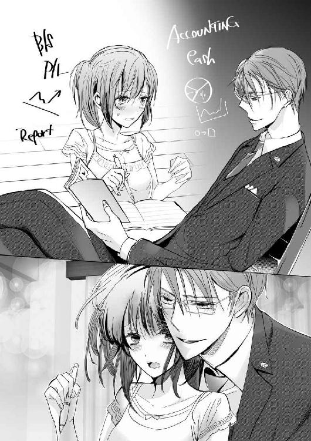
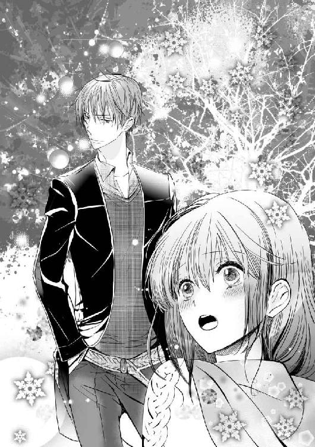
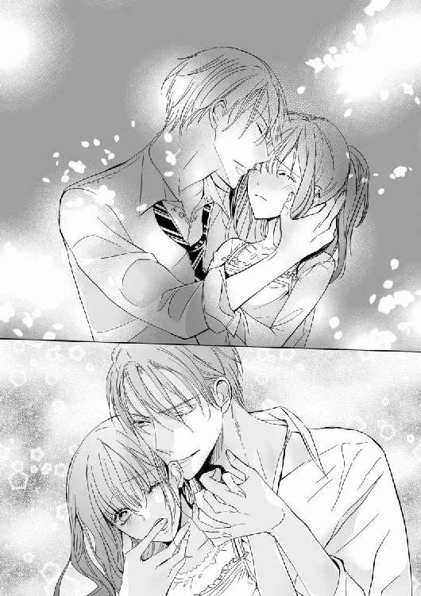

| 俺様なアイツと偽装婚約 (LUNA文庫) | |
| 朝陽 ゆりね | |
| 天海社 (2016) | |
俺様なアイツと偽装婚約！
［著］朝陽ゆりね
［イラスト］南香かをり
プロローグ
気持ちワリぃ......さすがに飲みすぎた。
我ながら愚かだった。あのバカヤロウがマトモじゃないことは最初から気づいていて、警戒すべしと思っていたのに。おかげで今まで築いてきた俺の栄光がパーだ。テメェの会社がどうなろうがこっちは知ったこっちゃないが、ウソをついて会計監査逃れをされちゃー見逃したこっちはどんだけ査定に響くか......。
「はぁ......」
いや、ムカついているのはやけ酒に走り、飲みすぎてへべれけになっている自分自身だ。バカヤロウのせいじゃない。忙しさにかまけ、ウソを見抜けなかったのはほかならぬ俺。それでもって周りはそのことをちゃんと理解していて、向けてくるまなざしが〝愚か者〟と語って嘲笑している。そんな状況を作ってしまった自分自身が激しく許せないんだ。
わかってるさ、そんなこと。
......いや、上司も問題だ。俺のことを嫌っているアイツ的には俺を追い落とすには絶好のチャンスだろう。
「はぁ......」
所長も所長だしな。風見鶏。所長のくせによ。
なんかイヤになってきた。
辞めちまおうかな、会社。
いっそ、独立して、自分の事務所を持つ、とか。それもいいかもしれない。
「あっ、いてぇっ」
うえぇ......体のどこかをぶつけたみたいだ。いや、体が浮いたような気もする。視界がピンボケしていて焦点が合わない。......あれ、足？ ひねった？ 立てないじゃないかっ。
不快さと頭痛とめまいでよくわからん。でも、体が動かないかも？
遠くで、酒臭いって声が聞こえる気もしなくもないが、だったらさっさとどっか行け。
「大丈夫ですかっ？」
「............」
「ここ、人通りが多くて危ないし迷惑だから、こっちへ。立てます？」
「......えぇ、すみません」
マジで痛い。どういう状態で歩いているのかよくわからないが、きっとみっともないかっこうなんだろう。けど、そんなこと言ってられない。とにかく足が痛いし、気持ちが悪い。
「こっち、ベンチがありますから」
誰か（女みたいだが）に引っ張られて、座らされた。
世の中、親切な人もいるもんだ。朝まで飲んだくれていた酔っ払いを介抱してくれるんだから。
朝まで飲んだくれて、か。
はぁ......なんか最悪だな。
「これ、ミネラルウオーター。それから酔い覚ましにコーヒー」
「え？」
ぼんやりする頭を動かしてみると、至って全身普通の女がペットボトルと缶コーヒーを差し出しているのが見えた。
「......すみません」
「あっ、血が出てる。さっき転んだ時に打ったんでしょうね。痛かったでしょう？ 早く帰って手当したほうがいいですよ。それにスーツも。こんな高そうなスーツ、血で汚しちゃってもったいないし。私、もう行かないといけないから、これ以上はムリですけど、気をつけてくださいね。下のほうだったからよかったけど、上から落ちたら大けがものでしたよ」
「すみません、出勤前なのに」
と、礼を言ったものの、Ｔシャツとジーパンの姿を見て、自分が間違っていることに気がついた。
出勤前じゃなくて、通学前か。
「いえ、試験なんです、これから」
「試験？ なんの？」
あ、いや、別に本気で知りたいわけじゃなく、反射的に聞いてしまった。
「税理士試験。......あぁ！」
びっくりした。
「あの？」
「ヤバいっ、間に合わない！ ごめんなさい。私はここでっ」
慌てて走り去ってゆく女の背をぼんやり見送る。
ゼイリシシケン？ ゼイリシ......。
焦点の合わない俺の意識は、今、八月一週目の真夏で、彼女が年一回行われる税理士試験を受けようとしているということにようやく気がついた。
試験会場に向かう途中で俺を介抱してくれたのか......。
大学生っぽかったけど、大学生なら夏休み中だ。通学でもないな。
いやいやいや、頭痛と吐き気で思考回路はめちゃくちゃだ。
早くなんとかしないといけないのは飲みすぎによる影響で......彼女の身の上を考えることじゃない。
「う、胃に沁みる」
もらったミネラルウオーターを飲み、缶コーヒーをポケットに入れた。
彼女、間に合うといいな......。どこの会場か知らないが、酔っ払った俺を介抱して試験に遅刻、受験できなかった、なんて目もあてられない......。
............。
いや、それはマズいだろう。
神様、アンタ本当にこの世にいるんなら、親切な彼女にラッキーを一つプレゼントしてやってくれ。
ミネラルウオーターも沁みるが彼女の優しさも身に沁みた。あぁいう女を嫁にできたらいい人生が送れるのかもしれない。
それにしても、早く家に帰って酒を抜こう。いつまでも腐ってなどいられない。
第一章 最悪な出会い
――半年前、夏。
大学を卒業し、父が興している税理士事務所で働き始めた長澤伊万里、二十二歳は、この長澤税理士事務所を継ぐため税理士をめざしている。妹がいるが、二歳年下の陽奈は理系女で、尊敬している偉人がキュリー夫人という具合。大学で物理を専攻しているので将来は物理学者になると宣言している。家業を継ぐことは絶対にない。まぁ、当たり前だろう。ベクトルの向きが違いすぎる。
継ぐのは自分しかいない！
本当は漫画家になりたかったのだが、大学に入った時点であきらめた。絵は悪くないと思っているものの、どうしても老若男女の中の〝老×男〟が描けなかったからだ。
綺麗な顔をした男の頬にほうれい線を描いたところで老人にはならない。それともう一つ。建物が苦手であった。
そういうわけで、高校までは漫画に必死、大学は税理士になるための勉強に必死、というような生活を送っていた。
さて、決意に燃えて大学時代から試験を受けているものの、結果はゼロベースを邁進している状態。つまり、四年間での成果は〝無〟であった。
説明しよう。
税理士になるには複数ある税法の中から五科目合格すれば資格所有者になれる。そこから税理士会に入会し、（高い）会員費を払って税理士登録をすれば、晴れて「税理士先生」になれる。
この五科目のうち、必須科目と選択科目があり、選択科目は呼び名の通り受験者が選んで受けるのだが、簡単なものは資格取得後侮られるので注意が必要だ。取ってしまえばなんでもいいとも言えるのだが、どこかの会計事務所に就職しようと思った時、その事務所の先生に「ウチにはこの科目のお客さんはいないからねぇ」なーんて言われる可能性がある。例えば、酒税法とか。これに詳しくても、酒屋さんや酒を扱う店以外は、あまり役に立ちそうもない。
当然、ウケのいい科目は消費税法とか、法人税法だが、こういうのは〝難しい科目〟と呼ばれるもので、なかなか受からない。世の中うまくできているものだ。
それに対し、必須科目は財務諸表論と簿記論。これがすこぶる難しい。何年も勉強しているのに結局試験をあきらめてしまう者の多くが、この二科目につまずくというパターンが多かった。
話を伊万里に戻してゼロベースの言い訳をすると、伊万里はその性格から、嫌なものから取り組むタイプであった。つまり、目の前の食事では、嫌いなものから食べてしまい、あとからゆっくり好きなものを食べる、というものだ。よって試験も難しいものからカタしてしまい、その後、安心してゴールイン！ というのをめざしたのだ。
......それが間違いだった。
（あぁん、受かる気がしない～！）
十八歳、大学一年生の時から取り組み始めた財務諸表論、いまだ合格に至っていない。よって、合格科目は〝ゼロ〟なのであった。
（ひぃぃぃっ～）
毎回上げる悲鳴、五回目のトライであった本日も、
（ひぃぃぃっ～）
あぁ、無情。
（駅の階段で転んだ会社員を介抱してる場合じゃなかった！）
高そうなスーツを着た若い男が目の前に落ちてきた。声をかけようと身を屈めると酒臭かったので酔っ払いだとすぐにわかったが、往来の激しい階段の脇で倒れていては通行人の迷惑だ。駅員を呼ぼうにも人の流れが激しい。仕方がないからなんとかその階段を上らせ、ベンチを見つけて座らせた。ついでに自腹でミネラルウオーターと缶コーヒーを買い与えて立ち去ったまではいいが、試験会場に到着したのが開始ギリギリの時間で、プチパニックに陥ってしまった。
（くー！ 酔っ払いに同情なんかしなきゃよかったっ）
後悔先に立たずである。
「......ただいまぁ」
聞こえないぐらいの小声をこぼしながら玄関の扉をあけ、中に入る。それからダイニングキッチンにやってきた。
伊万里の家は三階建ての一軒家である。一階は税理士事務所のオフィスで、二階と三階が長澤家のプライベートエリアとなっていた。そのため、玄関も外付けの階段を上がったところにある。
「どうだった？」
「あ、お父さん、仕事は？」
「お客さんとの接見で、この近くの喫茶店で話をしていたからね」
父の真澄がニッコリと優しい笑顔を向けた。現在、六十二歳の真澄は顔に年齢相応の老いが刻まれている。特に目じりや口元が目立つが、優しく穏やかな性格と相まって落ち着きのある風格を感じさせた。
お客さんとの接見......それが本当かどうかはわからないが、少なくても試験を気にして家にいたことは間違いないだろう。
「それで？」
「えーっと、もしかしたら......答えを書く欄を......えーっと、一行ズレたかも......」
なーんて言い訳をしてみるが、そんなミスなど起こるはずがない。財務諸表論は言葉通り〝論〟なのだから、マークシートなどではなく問いに対する回答を論じて書くのだ。行など間違いようがない。
「伊万里はまだ若いから焦ることはないよ。四十半ばで取る人もいるんだから」
「............」
「今日は疲れたろうからゆっくり休んで」
「......うん」
ガックリと肩を落とし、自分の部屋に向かった。
そんな姿を見送る母の和子が、
「残念だったわねぇ。頑張っているのに」
と、ため息交じりに言った。
「こればかりはねぇ。僕は試験を受けて資格を取った税理士じゃないから、伊万里の結果は咎められないよ。とはいえ、取ってくれないと、こっちも困るんだけど......」
真澄はテーブルに置いている封筒に目をやった。
「スタッフの人もまだ取れそうにないんでしょう？」
「......伊万里といい勝負かもしれないなぁ。まぁ、伊万里よりは早く取れそうな気もするけど」
と言いつつ、真澄は「うーん」と呻った。
「ちょっと冗談ごとじゃなくなってきた」
「そうよ。従業員の方々の生活があるもの。ウチだけの問題じゃないわ。小さなお子さんのいる方なんて困るなんて次元じゃないから。経営者として、きちんとしないと」
「......もしかしたら、伊万里が資格を取るまで待ってはいられないかもしれない」
「縁起の悪いこと言わないでちょうだい。初期じゃない。治るわよ」
「そうだね。でも、手を打っておく必要があるかもしれないねぇ」
「手を打つ？ どうするの？」
和子が真澄の顔を覗き込んだ。
「知り合いに資格を持っている人がいないか当たってみる。たぶん、大丈夫だと思うんだけど......ただそうなると、伊万里、傷つくだろうなぁ」
真澄はダイニングキッチンの扉を眺めつつ、一つ大きなため息をついた。
──半年後、十二月。
伊万里は郵送されてきた茶封筒を電灯に照らしていた。さっさと封を切ればいいものを、勇気がなくてあけられないのだ。薄っぺらい茶色の封筒を電灯に透かせると、一箇所、文字が見える。
──Ａ。
（あうー）
心の中で力なく嘆く。
Ａ......惜しかったのかもしれないが、不合格に違いはない。
不合格ランクは上がＡで最低がＤ。毎年一つずつあがっていったが、もう一段階登り切ることができなかった。
（惨敗だろうが惜敗だろうが、不合格は不合格よっ）
まったくもってその通り。
ハサミで封を切った。透かして見た通り、結果はＡだ。変わるわけがない。
（資格、ホントに取れるのかなぁ）
ガックリと肩を落としてため息をつく。とはいえいつまでも落ち込んでばかりもいられない。今は父の事務所でスタッフとして働いているのだ。母の和子がメールで知らせてくれたので事務所を抜け出して部屋に戻ってきたが、いつまでもここにはいられない。娘であっても雇われているのだから、早く戻って仕事をしなければ。
気を取り直して立ち上がろうとしたそこへ、扉がノックされた。
「伊万里、ちょっといいかな」
父の真澄だ。ドキンと心臓が跳ねた。
（ヤばっ、さぼってるし、私っ）
「入るよ」
「あっ、うん......」
伊万里が返事をすると真澄が入ってきた。と、後ろに和子もいる。何事かと、伊万里はにわかに緊張した。
「お父さん、ごめんなさい。すぐに事務所に戻るわっ」
慌てる伊万里に真澄が微笑みかける。それから和子と並んでベッドの縁に腰をおろした。
「合否通知が届いたなら見たいのはわかる。気にしなくていい。それよりも大事な話があってね」
「大事な、話？」
伊万里の顔が刹那に曇った。
「結果はどうだった？」
「......Ａだった」
真澄の顔に苦笑が浮かんだ。
「来年は絶対受かってみせるからっ！ ......その、ごめんなさい」
動揺しながら答える伊万里を、真澄が優しいまなざしで見つめる。それからゆっくりかぶりを振った。
「知っての通り、お父さんは二十年以上税務署に勤務して、税理士の資格をもらって独立した。試験は受けていない」
真澄の言う通り、税理士になるルートは試験だけではない。税務署勤務が二十年以上になれば、実務能力を評価され、資格を与えられるのだ。
そのほかには、大学院に通えば、合格同様とみなされ、必須科目以外を免除されるというものもある。
「だから頑張っている伊万里を責めたりはしない。立派だと思っている。だけど、少々問題があってね」
「問題？」
真澄はわずかにうなずいて手に持っていた茶封筒を手渡した。
「なに？」
「まぁ、見てくれ」
言われるままに中のものを取り出すと、伊万里は目を剥いた。
「ちょ！ お父さん！ ガンって！」
「前立腺ガンの初期だから先生は心配しなくていいとおっしゃってくれているし、わかったのは夏なんだ。ちょうど試験のあたりかな。治療を始めて半年でよくなったよ」
信じられない。父が前立腺ガンを発症していたなどと。
「なんで言ってくれなかったの!?」
「......悪かった。試験の時だったから心配させたくなかった」
「でも！ 終わってから話してくれたらいいじゃない！ 陽菜は知ってるの？」
真澄がうなずいたので伊万里はますます傷ついた。
「私だけ......」
隠されていた、とは。
「悪かった。だけど、僕には病気以上に心配なことがあって、そのことで伊万里に負担をかけると思い、結果が出るまで言えなかったんだ。伊万里、もう一度聞くけど、この事務所を守ろうと思ってくれているのか？」
「当たり前じゃない！ だから今まで頑張ってきたのよ！」
「そうか、わかった。なら、伊万里には酷だと思うけど、大事な相談をさせてほしい」
伊万里は目をパチパチさせ、父の顔を凝視した。酷なこと、大事な相談──改まった真澄の言葉が伊万里の心臓を激しく打たせる。
なんだろう、ガンより深刻なことなど。
「今回の病気で、もしお父さんが突然倒れたら、この事務所はたたまなければいけなくなる。伊万里も知っての通り、税理士も弁護士も資格のいる職業は有資格者しか継ぐことができない。子供のいるいないは関係ない。だから伊万里は資格を取ろうと頑張ってくれている。だけど、いつになるかわからないし、もしかしたら取れないかもしれない」
伊万里は突きつけられた現実に奥歯を食いしばった。
意気込みだけではどうしようもできない世界だった。
「後継者がいなければ、顧客を他の税理士に引き受けてもらうか、資格のある税理士に継いでもらうか、それしかない。ここで働いてくれているスタッフの中にも勉強中の者がいるが、彼らも伊万里と大差はない。伊万里がこの事務所を他人の手に渡してもいいと思うなら、もうこれ以上頑張ることはないと考えた。だけど、伊万里が自分で長澤税理士事務所を守るんだというなら、もうこの方法しかないと思うんだ」
「......この方法？」
次第に熱を帯びてくる真澄の言葉を、伊万里は黙って聞いている。が、続けて言われた言葉は恐ろしく衝撃的だった。
「僕の友達に相談したら、ちょうど息子さんが会社を辞めて独立しようと準備中とのことだった。上杉光輝くんというんだが、実際に会って諸々説明したら、僕と組んで役員になってもいいと言ってくれた。ただ、そうなると、彼の善意に甘えることになる。それは僕としてはイヤだ。だから、伊万里、彼と婚約してくれないかな」
「──は？」
重い話を必死に聞いていた伊万里だったが、突然出てきた言葉を正しくキャッチできなかった。
今、なんと言った？ コンヤク？
（コンニャクじゃなくて？）
いや、〝コンニャク〟だったらもっと文脈が支離滅裂だ。
（えーっと、えーっと）
頭の中で必死に漢字変換してみる。
（......コンヤク......あ、困厄ってのがあるか！）
あるが、文脈から考えるとおかしい。
――だから伊万里、その彼と〝困厄〟してくれないかな。
合わなすぎる。
（えーっと、えーっと......やっぱり、婚約？ 婚約って）
両眼を、これ以上ムリ！ ってほど見開いている伊万里に向け、真澄は続けて話をしている。
「つまり、伊万里の結果がどうであろうと、この事務所は将来的に光輝くんに継いでもらおうと思う。だけど、伊万里が資格を取れたら、二人で話しあって決めたらいい。婚約は僕から光輝くんへの約束手形だ。それに理由はもう一つある。スタッフたちへの配慮だ。いきなりやってきた者が事務所を取り仕切ればいろいろ起こることだろう。でも伊万里の婚約者だったら〝やむなし〟と納得するはずだ。なるべく波風立てず、この事務所を守るためには、伊万里と光輝くんが婚約するのがベストだと思った」
めまいが襲った。
「お父さん、ちょっと待ってよ......その人は、その、私と婚約してもいいと言っているの？」
真澄がうなずいた。
「......え」
「結婚まで至るかどうかは会ってみないとわからないですけどって笑っていたよ」
「......そう、なの......でも、いかにもこの事務所を継ぎたいって下心を感じるんだけど」
不服そうに言う伊万里に、真澄は笑うだけだ。
「ヘタしたら乗っ取られるんじゃない？」
「伊万里が合格しなくて税理士になれなかったら、誰かに顧客をお願いして、ここをたたまなきゃいけなくなるんだ。伊万里と婚約してまで様子を見ようと言ってくれる彼のほうがいいんじゃないか？」
「でも......女と結婚して事務所を手に入れようなんて、なんか、どうだろうって思わない？ ねぇ、お母さん」
と、和子に助けを求めてみる。が、和子の返事は伊万里の期待を大きく裏切るものだった。
「世の中は綺麗事ではないわよ。彼はちょうど独立して自分の事務所を持とうとしているところだったし、ウチはお父さんの病気の関係で後継者のことで悩んでいる、互いに手を組めば互いに大きな利益になる。互いに渡りに船、でしょう。それにね、伊万里」
「うん」
「光輝くん、ものすごくハンサムなのよ！」
「......え」
和子の目がキラキラと耀いている。それはイケメン俳優が出ているドラマを見ている時の目だった。
「背も高くて、えーっと、一八〇センチって言っていたかしら。細マッチョでね、ちょっと強面なんだけど、俳優さんみたいにかっこいいの」
「......はぁ」
それで？ と問いたい衝動を押し殺す。
「それにものすごくエリートなのよ」
和子の声が上ずっている。
「何歳か知らないけど、私と婚約しようっていうんだから、若くして税理士の資格を取ったエリートよね」
隣から真澄が「二十八歳だ」と告げた。
「それに税理士じゃない、彼は会計士だ」
「えぇぇっ!?」
会計士とは、正確には公認会計士といい、日本三大難関試験の一つに挙げられる超絶難しい国家資格である。これを取れば、税理士の資格がもれなくついてくるのだ。
税理士は個人や個人商店の確定申告を行ったり、小規模企業の決算を行ったりするのだが、会計士は一定以上の規模の企業、つまり大企業の財務内容をチェックするのが仕事だ。だから会計世界のエリートなのである。
「だから伊万里ちゃん、瓢箪から駒を狙って、偽装婚約中に光輝くんの心を射止めちゃいなさいよ。そうしたら、いずれ夫婦でこの事務所をやっていけばいいんだから」
思わず「そういう問題じゃない！」と叫びそうになった。とはいえ、この話を頭ごなしに断ることができないと感じている自分がいる。確かに、今、父になにかあれば、事務所の人たちは困るのだ。子育て中のスタッフもいれば、ローンを抱えているスタッフもいる。転職できればいいという問題ではない。今より給料が下がれば生活が困るだろう。安全策を講じられるのなら、講じておかなければならない。それが経営者の責任と言うものだろう。いずれ父の事務所を継ぐのなら、こういうことにも心を砕いておかなければならない。
（そんな理由で......結婚するの？ で、でも、確かに利益は大きい。もし、その上杉って人がヤなヤツだったら、私が資格を取ったら辞めてもらったらいいんだし......まぁ、それを言えるかどうかって問題はあるけど......でも、もし辞めてもらうことになっても、婚約破棄は離婚じゃないからバツはつかないし。この話はラッキーって思うべき？）
混乱する頭で必死に計算する。弾いている電卓は壊れかけているが。
伊万里は自分を見つめる両親に向け、やむなくうなずいた。
「その話、わかったわ。事務所のためだし、お父さんのためだし、事務所のスタッフみんなのためだし......婚約ぐらいなら......まぁ......いいわよ......」
両親の顔がパァッと喜びにほころんだ。
「その代わり、相性が合わなかったら婚約なんて破棄だからね！ 私、好きでもない人と結婚する気なんか、これっぽっちもないんだからっ！」
こうして伊万里の受難の日々が始まった。
日曜日の昼下がり。
本来なら必死で勉強しているのだが、今日は試験よりも緊張する大問題に当たっていた。
伊万里は両親と共にホテルのラウンジに向かい、そこで両親と同じぐらいの年の夫婦と対面していた。先に来ていた夫婦は当初非常ににこやかだったが、さすがに対面後三十分が経つ今は、その顔は引きつっていた。
肝心の息子が来ないのだ。
（もしかして、逃げた？ ウソ、前向きだったんじゃないの？）
午前中、退職に向けた残務処理をするために出かけたという息子は、集合時間になっても現れなかった。
「おかしいなぁ、出かける時、時間を確認したんだが」
彼の父親の顔が引きつっている。
「押しているんだろう。仕事が仕事だから、そうはあっさり辞めることはできない。引き継ぎの準備が大変だと思うよ」
「いや、待ち合わせに遅れるのはビジネスマンとして失格だ。しかも連絡もしないで。メール一本ぐらいできるだろう」
先ほどから隣の母親が何度も携帯を鳴らしているが、電波の届かないところにいるか、電源が入っていないかのどちらかのため、かかりませんと繰り返されるばかりだった。
「まったく。いや、伊万里さん、申し訳ない。こんなに待たせて」
「......いいえ」
引きつった笑みを浮かべながら、伊万里は一人確信していた。
（絶対、逃げたのよ！ だって、私だって逃げたいんだもん！ 最初はいいかっこうをしてみたものの、話が進んだものだからイヤになったのよっ）
と、そこまで思って、ふいに妙な不安が浮かんでくる。
（......私がタイプじゃなくてイヤになったりして）
それはさすがに女として傷つく。とはいえ、どうしようもできない。
みなが「どうしようか？」という思いを顔に浮かべ、困惑しているところへ靴音が近づいてきた。
「遅くなってすみません」
伊万里は真後ろから声が落ちてきたので慌てて振り返った。
カッチリと三つ揃えのスーツを着こなした長身の男が隙なく立っている。やや面長の強面で、俳優かと思うほど凛々しい顔立ちだ。確かに和子がベタ褒めしたのがわかる。伊万里は呆然と彼の顔を見つめた。
「遅いじゃないか。三十分以上も遅刻の上に、連絡も寄こさず」
男はチラリと自分の父親を見ると、顔を長澤ファミリーに向けてうっすら微笑んだ。
「本当に申し訳ありませんでした。人にぶつかられた弾みでスマホを落としてしまいまして。見事に割れたもので、ショップに駆け込んだのですが、当たったのが新人の方で。本当に、申し訳ありません」
言いつつ、深々と頭を下げる。
新人スタッフがヘタレで時間がかかったと言わず頭を下げて謝罪するとは。
（良い人？）
と、素直な伊万里はそう思った。
「それは災難でしたね。まぁ、座ってください」
「失礼します」
光輝はまたもやうっすら微笑んでから、空いている席に座った。
「娘の伊万里です」
「はじめまして、長澤伊万里です。よろしくお願いしますっ」
と、挨拶するも、光輝はジッと伊万里を見つめるだけでなにも言わないではないか。みなが、おや？ と思ったその時、
「上杉光輝です。はじめまして」
と、ようやく挨拶の言葉が聞こえた。
「............」
イケメンに微笑みかけられ、伊万里は顔を真っ赤にさせて頭を下げた。
（この人が......今日から私の、婚約者!? ウソ......今まで、一度も男の人とつきあったことのないダメっ子の私が？ こんなイケメンと婚約者として交際するの？ わっ、緊張する！）
心臓がガンガンと早鐘を打っている。血が逆流し、胃が口から飛び出してきそうだ。
これから六人で歓談でもするのかと思いきや、三十分も話をしたのでこれ以上は無用だろうと親たちは早々と立ち上がった。
「じゃ、これからは二人でゆっくり話をしてくれたらいいから。婚約は、まぁ、あくまで表向きの形だけだから気にしないで」
「では伊万里さん、ごゆっくり」
「光輝くん、娘をよろしく」
「失礼しますね」
四人はさっさと二人を置いてラウンジを去ってしまった。
（他人事だと思って！ どーするのよ、はじめて会った男の人と、二人っきりでなにを話せばいいわけ？ これってもうお見合いじゃない！ し、しかも、こんなイケメンと......）
「おい」
（だいたい、お父さんは能天気すぎるのよ。肝心の病気のことは言わずに、こんな偽装婚約なんか企んで！）
「おい、聞いてるのか？」
（簿記論と財務諸表論！ さくっと取れたら苦労しないわよ。つか、大学に入ってから五年頑張ってきて全滅中なのにっ。十年とか二十年とかかかっているうちに、トラブったらどうしたらいいの!?）
「おい、人が話しかけているのに無視するな。焼き物」
「え？」
伊万里は自己の世界からようやく現実世界に戻ってきた。眼前の男は怖い顔で睨んでいる。思わず息をのんだ。
「お前の親父、骨董の趣味とかあるのか？」
「へ？」
「だってさ、伊万里って、ヘンだろ？」
「──――」
「〝焼き物〟ってさ」
刹那、伊万里の顔が朱色に染まった。色はさっきと同じだが、染まっている内容が真逆だった。
「それ！ 二度と言わないで！ 言ったら殴るから！」
「............」
「気にしてるのよっ」
光輝はしばらく伊万里の顔をしげしげと眺めると、ふいにクスリと笑った。明らかに嘲笑だ。伊万里の朱色の顔が一段と濃くなる。怒りに羞恥がインされて、今にも噴火しそうなレベルである。
上杉光輝は続けて、ふふふふっと可笑しそうに笑い声を落とし、それから身を乗り出した。腕を膝の上に置き、前で手を握り合わせる。
「今から俺の言うことをしっかり聞け。二度も言わないからな」
「......え」
「俺に従わなかったら、俺もお前の親父の要求は無視する。親たちは五年ぐらいだろうと思っているようだが、婚約した人間が五年も結婚しなかったらヘンだろ？」
「............」
「特に、事務所のスタッフが」
確かにそうだ。
「だから三年以内で取れ」
「さっ！」
「わかったか？ 焼き物」
ビクリと伊万里のこめかみが震えた。が、言葉が出てこなかった。三年で五科目全部合格など、伊万里には絶対に不可能な要求だからだ。
「と、取れなかったら、どうなるの？」
「お前の親父の事務所、まるっと俺がもらう」
「――――」
「それがイヤなら死に物狂いでやれ。三年で取ったら婚約解消してやるから」
「そんな......ムリ」
光輝は腕を組むとソファに背に大きく凭れかかった。
「あんなの簡単だろうが」
「か、簡単って！ いい加減なこと言わないでよっ」
光輝の目が見下していることを伊万里は肌で感じた。
「いい加減なことじゃない。簡単だ。俺は大学在学中に会計士の資格を取った。ハーバードのＭＢＡも持っている」
伊万里の目が蛙のように大きく丸くなり、口がぽかんとひらいている。
日本三大難関国家資格の一つである公認会計士の試験は七科目と面接の構成になっているのだか、それはそれは言葉にできないほど難しい。会計士になれば、伊万里が足掻いている税理士の資格もくっついてくるのだからいかに難関かわかる。会計世界のエキスパートだった。
ちなみに、実際に税理士業をするには税理士会に登録しないといけないが。
もう一つちなみのうんちくとすれば、弁護士になれば会計士の資格ももれなくくっついてくるのだが。
（ハ、ハーバードの、ＭＢＡ!?）
まぁ、なんということでしょう！
超エリートではないか。
（あわわっ、ムリ）
なにが〝ムリ〟なのか自分でもよくわからなかったが、伊万里の頭の中では〝ムリ〟という言葉だけがクルクルと回り始めていた。
「焼き物、お前に与える時間は三年だ。それ以上は待てない。三年経って五科目受からなかったら事務所は俺がもらう。だが、資格も取れないし事務所も奪われたくないというなら、別途交渉の余地はあるけどな」
「別途交渉!? なに!?」
「それはまた今度。俺はこれから仕事に戻る。引継書の作成に時間がかかっていてな。お前は二時間ぐらいどこかで時間を潰して家に帰れ。日本橋を歩いてカフェでお茶したってことで口裏合わせろ。不要なことは言うな。話題はもっぱら税金......そうだな、日本の消費税額はどれぐらいが妥当か、ってな話で盛り上がったとでも言っておけ。じゃ、しっかり勉強しろよ、焼き物」
「............」
光輝は言うだけ言うと、さっと立ち上がった。が、歩きだすことをせず、なんだかためらっているように伊万里を見おろした。
「なぁ、焼き物、はじめましてって本気で言ったのか？」
「......へ？」
「演技じゃなく？」
「......なんの話？」
「いや、なんでもない。じゃあな」
軽く手を挙げると、今度こそイケメン会計士、上杉光輝は伊万里を残してとっとと帰っていった。
これが上杉光輝との最悪な出会いだった。
第二章 俺様なアイツに奪われた！
（な、に、あれ？）
茫然自失。
硬直したまま動けずにいる。
（今、流行りの俺様？ いや、もっとひどくない？ 人のこと、焼き物って──）
だんだん怒りがこみ上げてきた。
（頭ごなしに三年で取れとか、別途交渉とか、口裏合わせろとか、なによ、あの言い草！ なにが大学在学中に会計士取ったよっ、なにがハーバードのＭＢＡよ！ そんなこと──）
たいしたことではない──はずがない。たいしたこと大ありで絶句の領域だ。伊万里は右手で口を押さえた。エリート中のエリートで、伊万里などどれほど手を伸ばしてもかすることもできないレベルだ。
伊万里は血の気が引くのを感じた。
（マジ？ 会計士にＭＢＡって、しかもハーバード!? うそ～ん）
ハーバードを卒業しているなら英語もさぞかし素晴らしいだろう。間違いなくネイティブだと思う。片言の英語で旅行に出かけた伊万里とは世界が違う。
目の前がクラクラとした。
スマートフォンを取り出し、「上杉光輝、公認会計士」と打つと、見事にヒットした。その中の一つにアクセスすると経歴が出てきた。
（と、東大の経済学部卒業してるんだ。すごー。いやいやいや、ハーバードっていうんだから、もっとすごい）
東大を卒業後にハーバード大学に入り、二年前に帰国してジャパン・アカウンティング・オフォスに入ったとある。
雲の上すぎて、すでに他人事だ。
伊万里はしばらくスマホを見つめていたが、最後にはなんのためにこの男を調べていたのかわからなくなっていた。
（お父さんって、超エリートの息子を持ってる人と友達なんだ。へー、なかなかやるじゃない）
とかなんとか考えたりして。それが自分の表向きとはいえ婚約者だということなど、すっかり忘却の彼方になっている。
それからホテルを出て、指示された通り二時間ぐらい時間を潰して家に帰った。そんな伊万里を待ち構えていたのが妹の陽菜だ。お見合いのあとの二人きりの時間をどう過ごしてどんな感じだったのかしつこく聞いてくる。
「うるさいって」
「写真見たけど、すっごいイケメンでびっくりしたわよ」
「写真？」
「うん。お父さんから見せてもらった」
あれ、そんなの聞いていない。
（私は今日、いきなり本人に会ったのに、どういうことよ）
と思っている伊万里を無視して陽菜は一人はしゃいでいる。
「ねぇねぇ、いいじゃないのさ。お姉ちゃん、このまま結婚しちゃえ！」
お約束なツッコミだと思う伊万里だ。もっとひねりを利かせればいいのにとぼんやり思う。
「大きなお世話よ」
「絶対自力じゃこんなエリート捉まえられないって」
「陽菜！」
陽菜は嫌味ったらしい目を伊万里に向けた。
「なによ、カレシいない歴二十三年のくせして。イブだって一人で過ごすんでしょ？ 向こうだって絶対嫌なら断ってくるはずよ。脈、あるんじゃないの？」
「――え」
脈。
......あるんだろうか？
（ないないない！ だって！）
焼き物、と呼ぶのだから。
「これは事務所を守るための密約なの。向こうの狙いはこの事務所よ。独立に向けて準備中で、ウチの物件手に入れられたらラッキーじゃない。お互いに利用し合ってのことで、結婚なんてまったく眼中にないわよっ」
「あらぁ～瓢箪から駒ってこともあるわよ。迫っちゃえばいいんじゃないの？」
さすが親子、母と同じことを言ってる。
「なに言ってるのよ」
「オトコなんて一皮むけばみんな一緒よ。裸で迫れば食らいついてくるわよ」
伊万里の額に脂汗がにじんできた。
これが二歳年下の妹の言葉か......と思うと空恐ろしい。
（いったいどういう恋愛遍歴持ってるのよ！）
とはいえ、陽菜は実際にカレシが途切れたことがない。なぜか子供の頃から男にモテる。理系女で、一見近づきがたそうなのに。
「まぁ、食らいついてきてヤっちゃっても、食われて終わりってこともあるわよね。こんなイケメン、オンナがいないわけないもん」
バカにされたと怒るべきか、確かにオンナがいないわけがないと同意すべきか。
（わ、わかんない自分が情けない）
と思っている伊万里を無視し、陽菜は一方的にしゃべっている。
「ねぇ、そんなにイヤなら、私が代わってあげようか？ 別にお姉ちゃんでなくてもいいんでしょ？」
伊万里は陽菜を睨みつつ、確かにそうだと思った。
陽菜があの俺様と結婚すれば、娘婿の事務所になるのだから家業は守られることになる。伊万里はタイムリミットなど気にせず、働きながらじっくり勉強をすればいい。だがしかし、それって――。
（なんだか汚いやり方じゃない？）
安全パイを手にしつつ、自分はのんびり好きにやるのは真面目な伊万里には納得できなかった。とはいえ、妹にやり込められるのは釈然としない。
「陽菜とお父さんたちがいいんなら、私はかまわないわよ。あくまで私が合格するまでの間の偽装婚約だもん。陽菜が代わってくれるんならありがたいわよ！」
「ホントにぃ？ お姉ちゃん、やせ我慢もほどほどにしないとさぁいつまで経っても結婚できないよ？ オトコってね、なんだかんだ言っても素直で可愛く靡いてくれるオンナが好きなんだから」
なぁ～にぃいいいっ!?
怒り心頭。怒髪天を衝く。
「本気で言ってるのよ！」
焼き物、なんて呼ぶ男なんか願い下げ！ である。あんな憎たらしい〝俺様〟なんじゃなく、優しい男を見つけてみせる！
「やぁねぇ、お姉ちゃんは真面目一徹で。冗談に決まってるじゃない。そんなにムキにならないでよ。私にはカレシいるし、まだ大学生だから婚約はヘンよ。それにその人二十八歳でしょ？ 私、上下二歳以内じゃないとイヤだから」
「あ」
そう、陽菜は年の近い相手が好みで、三歳も年が違うと見向きもしなかった。
「東大卒、バーバードＭＢＡ、会計士、長身、イケメン。こんな奇跡みたいな物件、フツー出会えないからさぁ。まぁ、中身は知らないけど。じゃ、お姉ちゃん、頑張ってね」
そうかもしれないが、おっしゃる通り中身は最悪なレベルにむかっ腹の立つ超俺様である。
（願い下げよっ、願い下げ！）
伊万里は陽菜の背を見送りながら、心の中にて本気で怒鳴っていた。
翌日、事務所のスタッフたちが出勤してきて全員がそろうと、真澄は話があると切り出した。
「みなさんに大切な話があります。みなさんの身上に大きく関わることなので、よく聞いてください」
その言葉にスタッフたちの驚きと動揺が走った。
「もし話を聞いたあと、今後について相談したいということなら時間を取りますので、遠慮なくおっしゃってください」
そう切り出し、一呼吸置く。スタッフたちがただ事ではないと息をのむ様子が伝わってきた。
長澤税理士事務所には真澄と伊万里以外に十人のスタッフがいる。これは個人の税理士事務所では多いほうだ。一人でやっている者もいれば、夫婦でやっている者もいる。また税理士一人に事務スタッフ一人などというところも多い。そんな中で十人以上のスタッフを抱える事務所はかなり規模が大きいと言える。
しかしながら、有資格者はいない。真澄が倒れたら、この事務所は閉めなければならない。国家資格の必要な仕事は、どんなにスタッフがベテランであっても、血のつながった子供がいようとも、資格がなければ誰も継ぐことができないのだ。言い換えれば、いかに実務がボンクラでも、資格さえ取れば「先生」ということになる。
ちなみに長澤税理士事務所のスタッフは、
尾崎邦夫、五十五歳。事務所開設当時からいるベテランスタッフで、真澄の親友。伊万里を子供の頃から知っている第二の父のような存在だ。
三村貴志、四十五歳。三人の子供を持つ十年選手。ずっと勉強していたが、昨年三人目が生まれたので資格取得を断念した。子育て中のパパは大変である。
牛島一成、四十歳。独身。資格取得のため勉強中。とはいえまだ必須科目が二つとも残っているので、年齢を鑑みれば、口に出して言えないものの可能性は低いと真澄は思っている。こちらももう十二年もここで働いている。
佐藤要、三十八歳。二人の娘がいる。現在、資格取得のため勉強中。こちらも同様だ。まだ必死科目を含めて三科目残っている。
増田陽一、三十一歳。独身。税理士になる勉強はしていない。
飯館直人、二十八歳。息子が生まれたばかりで、資格取得に向け猛勉強中。唯一見込みがあるのだが、まだ四科目取らないといけないので先は長そうだと思われる。
東啓子、四十一歳。バツ一子持ち。資格などまったく無関係の世界の住人だ。遠くないうちに再婚する予定だそうだ。
中島歩美、二十九歳。独身。事務所の諸雑務係。一番若くて社歴も短い。
吉田和実（六十二歳）、入力業務を行うパート。二十五年近くここで働いている。
秋本尚子（五十一歳）、同じく入力業務を行うパート。こちらも二十年働いているスタッフだ。
と、いった具合である。
「実は夏に前立腺ガンになりまして、放射線治療と薬物治療で経過は良好ですが、様子見の状態です。病気に関しては心配しないでいただきたいものの、僕としてはこのままではいけないと思いました」
ガンと言われてスタッフたちが一瞬息をのんだが、最後はホッと胸をなで下ろした。
「もし僕になにかあれば、みなさんには大変な迷惑をかけ、心配をさせることになります。長年頑張ってきてくれたみなさんに生活の心配をさせるのは忍びないので、この事務所を法人化することにしました」
法人化、という言葉にスタッフたちから「ほうぅ」と安堵のような驚きのような声が上がった。
一人でやっている事務所は「個人事業主」とされる。それに対し、資格保有者が二人以上でやっている場合、法人事業所として登録でき、どちらかがいなくなってもまた個人事業主の事務所に戻るだけなので、直ちに事務所をたたむ必要がない。それは働くスタッフからすれば職場が経営的に安定するのでありがたいことだ。
とはいえ、所長である真澄の娘、伊万里はまだ資格を取っていない。真澄が誰を相棒として連れてくるのか、それは大きな問題である。スタッフたちは固唾をのんで真澄の言葉を待った。
「伊万里はまだ一科目も取れていませんし、ここで働きながら勉強している佐藤くんや牛島くん、飯館くんも、今しばらく時間が必要です。で、僕の友人に相談したところ、その友人の息子さんが会計士で、ちょうど独立するために会社を辞めようとしているとのことでした。なので僕は彼と組んでこの会社を法人事務所にしようと決めました。さらに、伊万里と引きあわせたところ、意気投合したようで、将来を見据えたおつきあいをすることになりました」
スタッフたちが一斉に「おぉ！」と言って伊万里に注目した。こんなめでたいことはない。一方、注目された伊万里は恥ずかしさのあまり真っ赤になってうつむいている。
「二人がうまくいったら、娘と娘婿がこの事務所を守ってくれることになります。そういうわけで、しばらく二人を温かく見守りながら、僕と彼との体制でお願いしたいと思います」
真澄は言い終え、うんとうなずいた。が、あっと小さく声をもらし、また続けた。
「大事なことを言い忘れました。彼は上杉光輝くんといって、ＪＡＯ、ジャパン・アカウンティング・オフィスに勤務していまます。今月末に退職するのかな。近日中にみなさんに紹介しますが、正式にこの事務所で働くのは年明けからです」
事務所内にどよめきが起こった。ＪＡＯとは日本で五指に入る大手会計事務所だ。そんなところに勤めているエリートがこの事務所の役員になるとは。そして所長の娘、伊万里の交際相手になろうとは、と。
税理士には三パターンの方法でなることができる。
まず、五科目すべて試験に受かる方法。優秀な人間なら、一発で受かることも可能だ。大学在学中に資格を取りました、などという者も少なくはない。
次に大学院に通う方法。税理士資格には、税法系と会計系の二種類あって、これらの修士課程を修了すれば、有資格相当者と判断される。ただし担当教授による承認推薦状がいるが。二種類の修士課程を卒業すると、合計で三科目もらうことができる。つまり、それぞれ一科目ずつ試験に受からないといけない。昔は二種類の修士課程を卒業すれば資格を取ることはできたが、現在は不可だ。
最後の方法は、税務署に二十年以上勤務して資格をもらう方法だ。この場合、ＯＪＴ（オン・ザ・ジョブ・トレーニング）により実務エキスパートと認定されて税理士の資格を得ることができる。真澄はこの方法で税理士になった。よって試験の辛さを経験していない。それでも実績で仕事をこなすのだから、こっちのほうが堅実といえば堅実だろう。
それに対し、公認会計士はもっと難しい。七科目各種の科目を短答式と論文式で合格しなければならい。近年、合格した科目を持ちこせる制度が導入されたが、有効期間があるので一発取りが理想だ。超難関試験であることに変わりはなく、まさしくエリートであった。その難関資格を在学中に取得するのだから、光輝がいかに優秀かは考えなくてもわかることだ。
伊万里は軽い頭痛を感じていた。ランチタイム、事務所のスタッフたちからさんざん祝福を述べられた。もちろんその言葉の裏に、この事務所の将来が安泰になったことへの安堵が含まれていることはわかっている。とはいえ、スタッフの過半数以上が伊万里を少女時代から知っているわけで、その伊万里にカレシどころか有能な結婚相手ができたことは、自分の家族に訪れた幸福同様の喜びとして受け止められていた。
（ううう......罪悪感が......）
互いに気に入ったわけでもなく、打算のための結託である。お見合いの末の婚約は、スタッフを安心させるためとはいえそのスタッフへの偽装工作だ。
他の事務所より多めの給料、真澄の良い意味での放任的管理、慣れた仕事、こんな条件の長澤税理士事務所だから、もし転職するとなるとどこも条件が厳しく感じられることだろうことは察するに容易である。だからこそ、なんとか彼らを守りたいのだが――。
（は、恥ずかしい。恥ずかしすぎる。だって......）
自席で仕事をしている真澄を目だけ動かしてチラリと見た。
（お見合いしました！ ってみんなに公言するなんて、恥ずかしすぎるわよ！）
この日は集中できず、同じ数字を眺めて終わった。
ＲＲＲＲＲＲＲ......。
スマートフォンが鳴っている。画面を見たら数字が並んでいるので知らない相手だ。伊万里は誰だろうと思いながら通信をオンにした。
「もしもし」
『俺だ』
俺って......と思うが......。
『焼き物の電話番号だろ？』
「は？」
と、反射的に答えてはたと理解する。上杉光輝だ。そう思った瞬間、ふつふつと怒りがわいてきた。
「この電話の持ち主は〝焼き物〟なんて名前じゃありません！」
『でも俺の婚約者の番号のはずだが』
「！」
婚約者！
驚きのあまり、椅子から転げ落ちそうになった。
『違うか？』
「あ、あの、えっと、はい、そうです、その通りです......」
『明日、そっちに行く』
「......はい」
『八時半ぐらいに行くから、三〇分程度時間がほしいと長澤先生に伝えておいてくれ。もちろん焼き物も同席だからな』
カチン。
とはいえ、文句は言えない。なんといっても、この事務所を救う救世主なのだから。
（ムカつく、私の名前は伊万里で、街の名前であって焼き物じゃないわよ！）
と、激しく思うが口に出して言えないから悲しい。
『おい、聞いてるか？』
伊万里はハッと息をのんだ。
そうだ、会話中だった。
「......聞いています」
『あと、お前の過去の試験結果も説明してもらうから』
「えぇっ!?」
『じゃあ、明日』
プチン、と電話は一方的に切られてしまった。
（ちょまっ！ 試験結果の説明って......）
ダメダメ続きの結果を報告せよと？
伊万里は昨日の光輝の様子を思い出し、ゾッとなった。
きっとボロクソ言われる。そうに決まっている。アホバカマヌケと容赦なくバカにされるに違いない。
よくこんな簡単なことを五回も落ちるもんだ！
五年も一体なにを勉強していたんだ！
実は勉強している〝フリ〟をしていただけじゃないのか？
お前の脳みそ腐っているんじゃないのか？
こんなドアホの婚約者なんてサイテーだな、俺は！
......なーんて言われそうだ。
（ウソ～それはイヤだ～）
だってなにを言われても反論できないのだから。
甘んじて受け入れ、「おっしゃる通りです」としか言えないのだから。
伊万里が絶望感を抱いていくら嘆いても、時計の針はきっちりと確実に時間を刻んで進んでゆく。夜が更け、朝日が昇り、伊万里は目覚まし時計のアラーム音で目を覚ました。
（あーん、ヤだぁ～）
着替えて顔を洗い、化粧をする。イヤだのなんだのゴネたところで、やってくる光輝を迎え入れるための準備を進めなければならないことは、避けることのできない現実だ。そのことにますます落ち込んだ。俺様会計士、イケメン上杉光輝は伊万里の婚約者なのだから。
朝食を食べ終え、コーヒーを飲んでいるとドアフォンが鳴った。
「いらっしゃったようね」
和子の言葉でみなが一斉に立ち上がる。それを見て、伊万里が不満を口にした。
「なんで陽菜まで立ち上がるのよ」
「はぁ？ お姉ちゃん、なに言ってるのよ、当たり前じゃない。お姉ちゃんの婚約者が家に来ているのよ？ 挨拶しなきゃ失礼じゃない。ねぇ、お父さん」
「そりゃそうだな」
伊万里の顔がゆがんだ。妹の前でけちょんけちょんに言われたら......ますますゾッとする。
和子が光輝に「おはようございます、いらっしゃい。こちらへどうぞ」と話しているのが聞こえてきた。光輝を客間に案内し、入れ替わるように真澄と陽菜が入ってゆく。伊万里は最後に入室して扉を閉めた。
「はじめまして、上杉さん。妹の陽菜です」
「こちらこそ、上杉です。事情があってのことですが、伊万里さんの婚約者として接することになりましたので、よろしくお願いします」
「はい！ できたらそのままゴールインしてもらえたら助かります」
！ と、伊万里の目が怒りで大きく見開かれた。
ちょっと！ 陽菜！ いらないこと言わないの！ と言いたげに陽菜の服を引っ張る。陽菜はその手を軽く払って意気揚々と続けた。
「姉は大学時代からこの事務所を継ぐために恋もせず一心不乱に勉強していたんです。カレシの作り方も知らない人なんで、無事に資格を取っても今度は結婚に苦労するのは目に見えてますから」
なんということを！
さすがに怒鳴りそうになった時、扉がノックされた。和子がお茶を用意して入ってきた。
「どうぞ、光輝くん」
「すみません、いただきます」
にこやかな返答。そこに陽菜が話を続ける。
「そういうわけなので、よろしくお願いします。姉はドジだけど、中身は悪くないんで」
なに言ってやがる、このバカ妹は！
と、叫びそうな顔の伊万里に向け、陽菜は「ねっ」と微笑んだ。
「伊万里さんがとても優しい方だということは存じ上げています。家族や職場の人たちを思って勉強に専念していることは本当に立派ですよね」
「えぇっ!?」
思わず言ってしまった伊万里に光輝が顔を向けてうなずいた。
「今回のお話は、長澤先生の事務所を守るための策なんで、僕たちの関係は〝表向き〟です。会ったばかりで先のことを話しては、伊万里さんも困ると思います。ねぇ、伊万里さん」
「......え、あ、そ、そうよ、陽菜。これは事務所を守るための〝策〟なんだから。協力してくださっている上杉さんに迷惑よ」
「えー、でも、瓢箪から駒っていうじゃない。お姉ちゃん、こんなイケメンと二人っきりになったことないでしょ。このままもらってもらいなよ」
「陽菜ぁあっ！」
「まぁまぁ、伊万里も陽菜もやめなさい。光輝くんの前でみっともない」
伊万里は本人の前であることを思い出して息をのみ、背筋を伸ばした。
「陽菜、挨拶は終わったからお前は下がりなさい」
「えー！」
「これからは事務所の話にするから邪魔だ」
父親からはっきりと邪魔と言われては仕方がない。陽菜は特段気にした様子もなく、光輝に会釈をして客間から出ていった。
「騒々しくてすまなかったね」
「いえいえ、僕は一人っ子なので、兄弟で賑やかにするって経験がないからうらやましいですよ」
「そう？ こっちは家に女三人だからねぇ、かしましいぐらいだ。まぁ、そもそも僕の立場なんてないんだけど。それで、話って？」
真澄の話をにこやかに聞いている光輝は、話を催促されてうなずいた。
「以前お話した通り、僕の退職日は年末です。なので正式にこちらへ出勤するのは来年からになります」
真澄が、うんうん、とうなずく。伊万里は逆に、なんだか嫌な予感に襲われ、背中に冷たいものが流れてゆくのを感じた。
「残務処理や引き継ぎもヤマを越して、週二回ぐらいは時間が取れるのですが、籍がまだ事務所にある以上、労働はできません。そこで、その週二回を効率よく有効に使いたいのですが......」
と、光輝が伊万里に顔を向けた。
「伊万里さん」
「は、いっ」
「過去、何回受験し、その結果はどうだったんですか？」
ギクギクギクギクぅ......。
「伊万里、答えて」
「えーっと、過去五回受けて、全滅......」
「受験した科目とランクは？」
光輝の声が胸に鋭く突き刺さるような錯覚。
「五回とも財務諸表論で、ＤＣＢＡＡの順......」
「財務諸表論以外、受けてないの？」
返事がつらくてうなずいてしまった。
「......そうか。学校へは通ってるんですか？」
これもコクリとうなずいて答えた。専門学校で財務諸表論だけ受けている。
「財務諸表論なら難しいから週二回だろう。だったら、長澤先生、来年はさすがに六回目だから自力で受かるとして、同時に比較的簡単な相続税法あたりを僕が教えます。僕が通う二回を終日勉強にあてさせていただけないでしょうか？」
「ちょ、待って！ 終日勉強って!?」
「ということは、伊万里の労働量を軽減する、ということだね？」
口をはさむ伊万里を真澄が無視して質問すると、
「そうです。今年から働いているならそんなに重い仕事はさせていないでしょう？ であれば、その分は、僕がやりますので」
と、こちらも伊万里を無視して回答する。
（私のことなのに、二人とも本人は眼中にないってわけ？）
そのようである。
伊万里は悔しくて食い下がった。
「あの、上杉さん、僕がやるってのは、私の仕事を上杉さんが代わってするってことでしょうか？」
「その通り。失礼な言い草だけど、たぶん僕がするほうが早くて的確だと思うな」
伊万里は奥歯を食いしばり、ぐぅと呻った。確かにおっしゃる通りだろう。だが、伊万里とて四月から今日まで頑張ってきたのだ。そうそうバカにされる覚えはない。
さらにムカつくのは、この良い子ちゃんな態度だ。
（私と二人のときはひどい口ぶりなのに！ なにが〝僕〟よ！ 俺様のくせに！）
と、心の中で暴言吐きまくり。
「でも！ 私だってちゃんと仕事していますっ。多少時間がかかっても、ミスもせずに――」
そこまで言ったところで真澄が伊万里の腕を掴んで「まぁまぁ」となだめに入った。
「伊万里、彼の話を最後まで聞こうじゃないか」
「お父さんっ」
「光輝くんはこの事務所のことを思って言ってくれているんだから」
確かに真澄の言葉は正しい。伊万里は悔しさにまたしても奥歯を噛みしめた。
「光輝くん、続きを聞かせてもらえるか？」
「それで来年二科目、再来年二科目、その次に一科目取れば、三年以内で税理士になれます。僕が役員としてこの事務所にいるのだから慌てることはないですが、早く取得するにこしたことはありません。どうでしょうか？」
「そんなにうまくいくかなぁ......」
チラリと目だけ動かして伊万里を見る。目が合った。
父親なのになんてことを！
と、叫びたいところをまたまたぐっと我慢する。同じ科目を五回も受けて撃沈しているのだから否定はできない。
「でもまぁ、考えても仕方がないことだし、案ずるより産むが易しと言うし、なんといっても光輝くんのおかげで法人化することができるのだから、ここは任せることにしよう」
「えぇ!?」
「伊万里、今も言ったが、彼はこの事務所のことを思って言ってくれているんだ」
「わかってるけど......」
口をへの字に曲げつつチラッと光輝を見ると、光輝はなんだか真面目なまなざしで伊万里を見つめていた。
（ん？）
なんだか今までと雰囲気が違う。しかしながら目が合うとさりげなく逸らされた。
（今の、なに？）
違和感を抱いたそこへ真澄が時間だと言って立ち上がったので伊万里の違和感はどこかに行ってしまった。
「九時だ。行こうか」
その言葉に促され、伊万里と光輝も立ち上がる。それから一階の事務所へと向かった。
スタッフは全員そろっている。光輝が姿を見せると、どよめきが起こった。
「おはようございます。昨日説明した通りで、この人が上杉光輝くん」
「上杉です。よろしくお願いします」
光輝が挨拶すると、一同も「よろしくお願いします」と頭を下げる。それから真澄が一人一人を簡単に紹介してゆく。伊万里は無言でその様子を眺めていた。
それが終わり、これから週二回、伊万里が勉強に専念することを告げると、従業員最年長、伊万里の第二の父的存在の尾崎が、からかった。
「伊万里ちゃん、もう税理士の勉強なんかやめて、嫁さん修行にしたらどうだ」
と。反論しようとする伊万里だったが、残念ながら味方はゼロだった。誰もかれも、もうすぐ結婚するんならムリして勉強なんかしなくてもいいだろうと言い、最後は今日から勉強タイムに突入し、二人で部屋に行けばいいとはやし立てる始末だった。
「もー！ 公私混同はしませんんんっ！」
なんて叫んでみても無駄で、結局、伊万里は光輝と共に事務所を出て、三階の自室に向かうことになった。
「みんな勝手なことばかり！」
「でも、本音じゃないのかな」
キッとなって光輝を睨みつける。当の光輝はどこ吹く風で嫌味ったらしく笑っていた。
「それにしても......」
「なによっ」
「女の部屋なのに殺風景だなぁ」
「！」
六畳の部屋に置かれている家具はベッドと勉強机と本棚しかない。服や雑貨はクローゼットの中にすべて収納されている。本棚にあるのは税理士になるための参考書や専門学校で使う教科書で、それ以外は小説と漫画でギッシリだった。
（あ、しまった！）
そう、高校まで漫画家をめざしていた伊万里の本棚は漫画で埋め尽くされていた。
「へぇ～、こんなエロい漫画があるんだ。知らなかった」
「ちょっ！ まっ！」
腕を伸ばしたが時すでに遅し。光輝はティーンズラブ漫画を手に取って中を読み始めていた。
「だめぇ～～っ！」
必死で光輝から漫画を奪い取る。だが、光輝はまた違う漫画を本棚から引き抜いてパラパラとページをめくった。
「お前さぁ、経験ないんだろ？ なのにこんなの読んで楽しいのか？」
「はっ!?」
「だって、わからないだろ、例えば、これ、とか」
見せられたページはショーツをはぎ取られたヒロインが大事なところに指を差し込まれて激しく濡らし、喘いでいるシーンだった。
「――――」
「こういうの、実際にヤったほうが気持ちいいと思うけど」
顔面蒼白、ではなく、顔面紅潮。いやいや、青くなった後に赤くなったのだ。まったく忙しいことである。
「おっ、大きなお世話よ！ あんた、なにしにこの部屋に来たのよ！ 勉強を見るためでしょっ！ 早く座りなさいよっ！」
光輝がくくくっと声を殺して笑っている。それが悔しくて仕方がないが、どうにもできない。伊万里は納戸から持ってきた折り畳み式のローテーブルをセットし、教材を置いて広げた。
「財務諸表論は暗記がすべてだろ？ 別のをやろうぜ」
「......別の？ でも、必須科目は絶対だから......」
「六回受けて全滅はないだろう。ここの事務所だったら消費税だろうけど、これは難しいだろうしな。やっぱ相続税がいいかな。参考書は？ まさか受ける科目しか教材を用意してないとか言う？」
コクコクコク......。うなずく伊万里に光輝は呆れのまなざしを向ける。
「仕方ねぇな。このタイミングだったらまだ学校も始まってないだろ？」
コクコクコク......。その通りだ。専門学校は年明けから教室がひらかれる。
「だったら課題も出てないし......今までの復習でもするか。あー、結局、財務諸表論かぁ。つまんねぇなぁ。まぁいいや。今年の試験問題を解いてろ」
「今年の？」
「俺が採点すっから。そうしたらどこにミスがあったかわかるはずだ」
「......なるほど。あ、でも、問題解いてる間、あんたはなにしてるの？」
一瞬、心に「もしかして私の仕事を肩代わりしてくれる？」と思ったが、光輝の答えは違った。親指を立てて後方をクイクイと指す。
「焼き物愛用のエロ漫画でも読んで時間つぶす」
「なにーーーーぃっ！」
「どういうエロいシチュエーションが女の好みなのか参考にさせてもらうよ」
「あんたねぇ！」
怒鳴ってみても始まらない。どう転んでも光輝に勝てるはずがない。
結局、伊万里は今年の試験問題を解き、光輝はティーンズラブ漫画を読むということでおさまった。
（し......信じられない......このありえないほど恥ずかしくも情けない状況......誰か助けて......）
残念ながら、助けに入る者などどこにもいない。むしろ光輝は事務所の救世主なのだから、どうぞどうぞごゆっくり、たっぷり親睦を深めてください、と言いそうな勢いであるほどだ。
（えーんっ）
問題などまったく目にも頭にも入ってこなかった。
それでもなんとか集中しようとするのだが、斜め前に座る光輝が気になって仕方がない。よりにもよってティーンズラブ漫画を読んでいる上に......。
（なんか、その......とっても認めたくないんだけど......）
テーブルに肘をつき、手のひらに頬を乗せて漫画を読んでいる姿が見事に様になっている。
（......かっこいい、かも......かも......かも）
しかもビシッと決めた高級スーツ。袖から覗いている腕時計も高級品とわかる代物。会計士としてさぞかし高給取りなのだろう。
（陽菜が言うように、背も高くて、俳優みたいにイケメンで、超エリートなんてそう簡単に落ちてないよ。それはわかる。けど......そういう人がどうして私と？ だっていかに偽装でも、カノジョいるならそのカノジョ、激怒りじゃない？ だったらいないとか？ こんなになにもかもそろっているのにカノジョがいないってのもヘンだと思うんだけど......あ、そか、俺様で、性格悪いから、とか？）

ウダウダ考えていると、光輝と目が合った。
（うっ......）
真剣なまなざしでまっすぐ見つめられたら強面だけに怖いほどだ。
伊万里は視線を逸らすことができず、妙に熱い光輝の視線をまともに浴びて戸惑った。
視線も動かせないなら手も動かせない。ペンを持つ手が完全に止まっている。
「手が動いてないけど」
「わっ、わかってるわよっ」
「もしかして、エロいことを考えていたとか？」
「ンなわけないわよっ！ あんたがジッと見るから、気になって......」
「して欲しいなら言えよ。いくらでもヤってやるから。こういうの、どう？」
見せられたページはヒロインが脚を全開にしているシーンだ。伊万里の顔が真っ赤に染まった。羞恥７に怒り３ぐらいの割合で。
「いらないわよっ！」
光輝が、はははっ、と軽快に笑った。
「冗談だ。見られたって気にならないほど集中すればいいんだ。注意力が散漫だから暗記できないんだよ」
ムカ～。とはいえ、正しい。
（くっ、いちいち正しいのがまたムカつく！）
握るペンに力を込め、伊万里は用紙に視線を向けた。
（集中集中っ！）
と、そこに。
「ちょ！ なにするのよっ」
ローテーブルの下で光輝が手を伸ばして伊万里の足を触ったのだ。あっという間に膝から太ももの内側に伸びる。伊万里はそれを力いっぱい叩き落とした。
「痛いじゃないか。三年で資格を取らせてやろうって言うんだ、ちょっとくらいサービスしろよ」
「なにがサービスよ！ 報酬はお父さんからもらうでしょ！」
叫びつつ、腰に回してくる手を必死で払いのけようとする。
「やめなさいよ。勉強しろって言ったの、あんたじゃない」
「そうだったっけ？」
「あっ」
意識が光輝の腕に向いている間に、光輝が顔を近づけてきていて、首筋に熱い吐息がかかった。いつの間にか光輝は伊万里の真後ろに移動していて、後ろから羽交い絞めにされていた。
「あっ！」
「なぁ、ホントに覚えてないのか？」
「覚え？ なんのこと？」
刹那、光輝がムッとしたように口をへの字に曲げる。
「お前、財務諸表論、受かりそうにないな」
「！」
「記憶力が悪いんだ」
「あんたねー！ ――！」
顔を向けて怒鳴った瞬間、唇がふさがれていた。
え？ と思う間もなく、驚きでわずかにひらいた唇の間から生温かい舌先が口内に侵入してくる。伊万里ははじめての出来事に仰天するも、しすぎて硬直してしまった。
「......ん......ん......ぅ」
喉の奥で声が引っかかる。
熱くて、苦しくて、そのくせなにかが蕩けてしまいそうで、不思議な感じがする。
嫌だと思うのに、どこかで受け入れそうになっている気がする。
「......ぅ、ん......うぅ」
声ではない音が出るだけ。さらに強く抱きしめられ、光輝の体温が全身を包み込んだ。
「や......だ、めっ」
チュッと肌を吸う音が耳元で響く。それを聞くだけで耳から官能に浸食されてゆく気がする。伊万里はどうしようもない羞恥の中で、自分の心と体がいけない世界に引っ張られていることに気づいた。
ダメ！
強く思うが、思うだけで体は言うことを聞かない。今の言葉が、言葉になって言ったのかどうかもわからない。
「......は、ぁあっ、ん、や......」
口から出るのは熱っぽい吐息と、恥ずかしい声だけだ。
「やめ......」
「体はやめてほしくなさそうだけど？」
「そんなことない......ひゃあっ！」
服の上から胸の高みを触られた。カーディガンの中とはいえ、ブラウスとキャミソールとブラの上からなのに、バストトップを的確に触れられ、飛び上がった。
「やめてっ！ それ、セクハラ！」
「俺たち、婚約してるけど？」
「表向きじゃないっ」
チュッとうなじで音が響いた。
「やだっ」
「そうかな？ ここはほしがってるけどな。下着やブラウスの上からでもわかるぐらい硬く勃ってるからすぐにわかる。これ、どうだ？」
伊万里は、はうっ、と息を吐き、そのまま呼吸を止めた。それからくっと歯を食いしばる。
「あっ！」
そこから大きく口をあけたものの、息を吸い込むことができなかった。
全身が甘い痺れに溺れてゆくような錯覚。光輝の息が首筋にかかって拍車をかける。
「三年で受からせてやるよ。だからこのまま委ねろ。それに漫画じゃ満たされない。エロいことはヤッて感じられるんだ。俺が満足させてやる」
「......やっ......こんなの、いやよ。私のこと好きでもないくせにっ」
「好きでなくてもできるだろ？」
「あんたの性欲の解消に利用しないでっ！」
伊万里は体をよじって光輝を振り払おうとした。だが、光輝の両腕がガッチリと伊万里を捉えていて離さない。逃げることは不可能だった。
「お前ら親子はどうなんだよ。俺の資格をアテにしてるじゃねぇの」
「う！」
その通りだ。
「お互いさまだろ」
「あ、だめぇっ」
胸の上にある光輝の指がまた動いて服の上からトップを刺激する。痛いような気持ちいいような、不思議な感覚に伊万里は強く目を閉じた。
「お互い様だろうが。表向きだろうか偽装だろうが、婚約してるんだからいいじゃないか」
「それ、いやっ！」
反論しようとしたものの、光輝が耳たぶを甘噛みしたので伊万里はその刺激にまた息を止めた。ゾクゾクする。体の奥底からなにかが湧き上がってくる。なにかが目覚めようとしている。こわい。
「は......ん」
苦しいほどの欲求。突き上げてくる甘美な誘惑。
これこそが体が求める官能の世界なのだと伊万里ははじめて思い知らされた。確かに漫画を読むだけでは得られない淫らで甘やかな享楽だ。
「ひど、い......」
「黙って目をつむっていたらいいから」
「......ふ、ぇ......ん」
また、キス。濃厚で息ができないくらいの......。
「あ......」
伊万里はなぜだか身動きできないことに戸惑った。好きでもない男に体を自由にされるのはイヤだ。しかも、〝焼き物〟と呼ぶような男になんか。それなのに抱きしめられて抵抗できない。胸の奥を甘美ななにかが流れていて、それを求めている自分がいる。
打算ではない淡い期待――。
「......く」
両手をぎゅっと握りしめたあと、反射的に手を伸ばし、なにかを掴もうとした。その手が光輝の足に触れ、思わずスーツのズボンを鷲掴みにしてしまった。
前がはだけている――そう思ったら、今の自分がどんな状態になっているのか気づいた。
ブラウスは前が全開、キャミソールは肩ひもが垂れ下がり、タイトスカートの中から引っ張り出されて光輝の手が侵入している。ブラはホックが外れていて、キャミソールの中でだらしなく緩んでいた。
「な、あ......ん」
耳たぶ、うなじ、肩、光輝の柔らかくも弾力のある唇が踊りながら流れてゆく。
キャミソールの中の手は、緩んだブラの下から侵入し、伊万里の乳房をすくい上げるようにして被いながら揉んでいた。
「あ、それ！」
人差し指と親指が乳頭を摘み、くねくねとこねくり回している。きゅっと潰されると、ビリリとした激しい刺激が四方に鋭く走った。
ナマで胸を触られてる現実。しかも恋人でもない人に。だけど婚約者だ。
（この現実、受け止められない！）
伊万里はまた強く目を閉じた。
「あぁん......」
乳頭から起こるビリビリ感。鎖骨のあたりで踊っている唇。自分の体になにが起こっているのかわかっているようでわかっていない状況。だが、明確なのはこの刺激がたまらなく伊万里の心と体をあらぬ世界に導こうとしていることだ。
さらに変化が起こった。乳頭をいじられればいじられるほど、〝もっとほしい〟と思ってしまうこと。腰の奥の手の届かない場所がチリチリ炙られるように反応して疼いている。
――ここも触って。
そう訴えかけているようだ。
「やん！ だめよっ、こんなのっ」
脳裏に浮かぶ言葉は、
――堕ちる。
伊万里は顎を突き上げるようにして上を向き、はぁと熱っぽい息を吐きだした。
全身が疼いている。
次がほしいと訴えている。
乱れて穢れてしまえと言っている。
「だめよっ、だめよっ！」
はしたないと思う心と、堕ちて求めてしまえと誘う心がせめぎ合う。
「あ、ン、あっ」
揉みしだかれ、いじりまわされて感覚がなくなってしまったような気がする。腰の奥、お腹の底、普段意識しない場所がジリジリと疼いて存在を訴える。それが女の場所だとわかると羞恥も起こるが、愉悦が膨れ上がってすぐにどこかへ消えてしまった。
このまま――そう思った時、伊万里は疼いている場所にほど近いところを押されて目を見開いた。今までの刺激など子供だましだったかのような甘く淫らな刺激が全身を駆け巡った。
「あぁん！ これぇっ！」
伊万里の足に光輝が自らのそれを内側から巻きつけるように絡ませて大きくひらかせている。そして片方の手を下着越しに奥深い谷間にやって引っかくように擦りつけてきた。
「やっ、やっ、やぁっ！ おかしくなっちゃう！」
「なればいいんだ」
「！」
「おかしくなるように責めているんだから」
伊万里は迫りくる愉悦から逃れようと必死にかぶりを振る。そんな伊万里の耳に光輝の言葉が続く。
「本当に男とつきあったこと、ないわけ？」
またしてもかぶりを振る。それは肯定否定ではなく、全身を痺れさせる刺激への抵抗だった。
「じゃあ、バージンってことだよな？」
バージン！
必死の伊万里の心を引き戻した。
「バージンのどこが悪いのよっ！」
心も体も余裕がない。もう限界が近くて本当にどうにかなりそうだ。それでも名誉のため――ではないが女としての意地がそう叫ばせた。
「誰も悪いなんて言ってない。お前が無垢だとわかってますますうれしいだけだ」
「――えっ？」
耳元で囁くような言葉に伊万里は目を見張った。
「な、に？ それ――」
その問いの答えは言葉ではなかった。下着とストッキングに守られた伊万里の性の扉をより強く擦り、押してきた。
「ひゃああっ、だめぇっ」
「あんまり大きな声を出したら下に聞こえるんじゃないのか？」
「だ、......て」
「これ、邪魔だな」
刹那、ブチッとストッキングが裂ける音がする。同時に圧迫感が強まった。
「ひン！」
カリカリと引っかかれ、めまいがするほどの愉悦が起こる。腰がもっと気持ちのいい場所に導きたくてむずむずと揺れる。伊万里は光輝のズボンを力の限り握りしめ、荒れ狂い、押し寄せてくる高波に耐えようとこらえた。
「けっこう濡れてきたな。どう？ 少しは感じてる？」
少しどころか全身愉悦でわなないている。
「もう、やめ、て」
「ウソつけ。もっとヤってほしくて疼いてるくせに。腰が動いてるぞ」
「ヤ――は、ぐっ！」
指がショーツの脇から侵入してきた。
「そんな、とこ、ろ......いやら......あ！」
しっとりと濡れている。自分でも触れない場所を光輝の指が伝うように触れてきて、深く感じてしまう。弧を描くように、陰部でひっそり咲いている陰花の花弁の感触を確かめるように。
「あっ、あっ、そこっ」
浅い部分を擦られているだけで、奥に進む気配がない。体はもっと奥深いところに来てほしいと訴えている。胸から起こる甘い刺激と、性の花をいじられている刺激が伊万里から理性を奪っていった。そして愉悦に悶えて、光輝がストッキングごとショーツを脱がせたことにもまったく気づいていなかった。
「は、ぁっ、もう、だめっ、これ以上っ――ひん！」
ぬちゃぬちゃと恥ずかしい音が響いている。ぐいっと指が中に入り、熟れ始めている花芯を強く引っかいた。その強烈な快感が全身に駆け巡る。伊万里は顎を突き上げ、あぁ、と甘い声を上げて光輝に凭れかかった。息を止めるとさらに強く花芯を擦られる。身悶えしながらも甘い快感にもう心は完全に堕ちていた。
「......い......い、もっ......と」
恍惚となり、その先を望む。あと少しでなんだかとてつもないことが起きそうな気がする。
「もう、ちょっとっ」
「けっこう感度いいかもな。かなり濡れてきた。でも......まだ狭いし、ちょっとつらいかもしれないが我慢しろよ」
「が......まん？」
「最初のほうだけだから」
蕩けた頭で光輝の言葉を聞いていたが、その光輝が動いたかと思ったら床に寝かされた。
「あ、の」
ほんの少し理性が戻った瞬間、強烈な痛みが下腹部に起こり、脳天をブチ破りそうな勢いで全身を貫いた。
「ひぃいぃつ！」
あまりの痛さに絶叫しそうになったが、キスでふさがれた。
「んん！ んっ！ んんんんっ！」
痛くて痛くて仕方がないのに、強く押してくるのは信じられない大きさのものだ。サイズが到底合っていないと思うが、それがなんなのか、経験がなくてもさすがにわかっているので、伊万里の中では知識と現実がごっちゃ混ぜになって大混乱していた。
（こんな――）
痛みに顔が引きつり、息もできない。
「いたいっ」
「りきむなよ。すぐ楽になる」
グイグイ押してくる。それを必死で阻んでいるのは自分の体。
（私......）
伊万里は自分の心が体を責めていることに気づいて驚いた。心の声は明らかに「どうして抵抗するの？」と言っている。それは光輝を受け入れたいと思っている証拠だ。
（どうして）
ついこの前、はじめて会ったばかりだというのに。人のことを〝焼き物〟と呼ぶ俺様なのに。頭ごなしに命令して、人を脳なしのように言う憎たらしい男なのに。とにかくムカつくのだけれど、ふと気づくとジッとこちらを見ていて、なんだかその視線が熱くて焦ってしまう。
伊万里は痛みに朦朧とする中で、あることに気がついた。お見合いの席で伊万里が「はじめまして」とあいさつした時、急に笑みを消して不機嫌そうになったこと。去り際の質問。そして先ほどの――。
――なぁ、焼き物、はじめましてって本気で言ったのか？
――なぁ、ホントに覚えてないのか？
（なんだろう......私、なんか大事なこと忘れてる？ でもこの前はじめて会ったはずだし、こんなイケメン、忘れるなんてないと思うんだけど......）
痛みは記憶を混乱させ、今とは関係のないことをフラッシュバックさせる。そして光輝に対する気持ちも。
（腹が立つのに、事務所のためのはずなのに、こんなことして......好きでもない人とエッチなんて、経験ないってのに）
それなのに、嫌じゃない。むしろ――。
「もう、だめ......」
大きすぎてはいらない......そう思った時、感覚が変わった。ほんの少し体の中に異物がはいってきてわずかばかり痛みが引いた。
「うっ」
ゆっくりと圧迫感が広がる。狭い蜜道を押し開きながら、硬くて太いものが奥へと進んでゆく。伊万里はその様子を生々しく感じつつ、はじめて異性と体がつながったことを思い知った。
（これが......）
男と女の関係。
男女の特別な関係になったとたん、なんだか急に、この憎たらしい男が愛しく感じられて――。
「あっ、あっ！」
ぐいっと押され、最奥部に達したことがわかった。
「こ、れ......」
「まだ痛いか？」
かけられた言葉に反応し、顔を上げて光輝を見る。そのまなざしは柔らかい。
伊万里はかぶりを振った。
「じゃあ、動くから」
「動く？ え――あぐっ」
光輝が腰を動かして抽送が始まると、下腹部を震源にして猛烈な愉悦が沸き起こった。蜜道を前に後ろに擦りつけながら快感を呼ぼうとする。享楽が波状のごとく押し寄せてくる。
「ひゃ、これ、ああっ、わた、しっ」
何度も激しく奥まで突かれ、チカチカと白い光が飛ぶ。泡ぶくんだ淫猥な音と、体がぶつかる音が混じり合う。ぎゅっと強く目を閉じ、歯を食いしばると快感が深くなった。
「イキ、そ......っ」
伊万里は光輝の背に両腕を回してワイシャツをぎゅっと握りしめた。
「あ、うっ！」
視界が白くハレーションを起こすと、伊万里は高みに飛翔した。
「............」
虚脱して腕が床に落ちた。それでも光輝はまだ抽送を繰り返しているので伊万里の体は激しく揺れている。
やがて光輝が伊万里を強く抱きしめた。
「ヤ、べ。ティッシュある？」
「......ティッシュ？」
なにを聞かれたのかよくわからない。焦点の定まらない目を光輝に向けた。
「いや、いい。責任とる。最初からそのつもりだったし」
「......なにが？」
ぼんやりしている伊万里の顔を光輝が両手ではさんでいきなりキスした。
「......ん」
何度か角度を変えてチュッと吸うと顔を離した。
「お前は黙って俺に従っていたらいい」
なにをまたエラそうに......という気持ちもほんのちょっぴり浮かんだものの、気だるさに負けてどこかへ消えていった。
そんな伊万里の様子など無視して、光輝は伊万里の首筋に顔をうずめると力任せに抱きしめてりきんだ。
沈黙。静寂。
時計の針が時間を刻む音が聞こえる。そして互いの荒く熱い吐息の音も。
間もなくゆっくりと光輝が身を起こした。それをとろんとしたまなざしで伊万里が見つめる。
「妊娠したら迷わず言えよ」
「――――」
「トイレ、借りたいんだけど」
「廊下の突き当たりの、左側のドア......」
「ん」
スーツのズボンを引き上げ、ファスナーを閉じると、光輝は前髪を掻き上げながら立ち上がった。セットされていた髪が乱れてなんだかとっても艶っぽい。
部屋から出てゆく大きな背中をぼんやり見つめて見送った伊万里は、ふと脳裏に浮かんだ言葉に目を見開き、驚いて飛び起きた。
（えっ、えっ、そんな......でも）
確かに聞いた。責任とる、と。最初からそのつもりだったし、と。だが、伊万里の脳裏をグルグル回っている言葉はそれではなかった。
（でも、その可能性、あるってこと、よね？）
――妊娠したら迷わず言えよ。
第三章 はじめてのデートはほろ苦くて
（信じられない――）
お腹が痛い。
もちろん、腹痛ではない。胃が痛いわけでも、下痢をしているわけでもない。女の部分が痛いのだ。そう、陰口の周辺がどうしようもなく鈍く重く、動くとガンと突き上げてくる。ロスト・バージンの後遺症に苛まれているという状態。
（信じられない......）
予想もつかない展開と状況の中、しかも「憎し」と思っている男に、実にあっさりバージンを捧げてしまった。
表向き交際が始まったことになってはいるが、出会ってまだ数日で合わせた顔の回数は今日で二度目。交わした会話の機会は三回。はじめて会った時と、電話と、今日。それなのに、セックス、とは。しかも自宅、自分に部屋で。さらに下の階には母親もいれば、父親もいれば、父の雇ってるスタッフがわんさかいるというのに。
（信じられないっ！）
好きでもなく、好かれてもいない、愛などこれっぽっちもないはずなのに、迫られて流されて責められて、感じて許して求めてしまった。さらに――。
（信じらないよー、なんだか憎らしさが薄れてる！）
目の前に座る俺様は、相変わらず無言でティーンズラブ漫画を読んでいる。顔を見る限り楽しんでいる風ではない。むしろ不機嫌だ。それに対して自分は、というと、今年の夏に受けた試験をもう一度解いているのだが、ぜんぜん進まない。そしてそのことを恥と思って焦っているのではなく、斜め前に座る光輝をチラチラ見ながら、なんだか甘酸っぱい想いに支配されて脳みそぼわっとしているのだから始末に負えない。
（どうしよう......）
トクトクトク......心臓が踊っている。
改めて上杉光輝という男を観察してみると、シルバー系の三つ揃えの高級スーツを見事に着こなしている。今はジャケットを脱いでいるのでワイシャツにネクタイ、それからベスト姿だ。今時の若者がベスト？ と思うものの、細マッチョな体に長身、仕事も会計士と言われたらなるほど狙っているのかな、とも思う。
今は暴れた後なので前髪が少し落ちているが、全体は後ろに撫でつけた髪型で、銀ブチ眼鏡が冷たい印象を与えつつも知的さを醸し出している。強面シャープな顎のラインの顔によく似合っていた。
（......悔しいけど、かっこいい）
さぞや女にモテることだろう。さっきもいかにも女になれた感じだった。
そこまで思って伊万里はハッとなった。
（こんな人が、どうして私と偽装婚約を？ まさか、気に入られてる？）
甘～い考えが一瞬よぎったが、すぐに否定した。
（そうだった。この人、会社を辞めて来年から独立するんだった。ウチの事務所の物件がほしいのよ）
危ない危ない、危うく騙されるところだった。気を引き締めなければ......と、思うものの、男前な顔を見ると、その気持ちが溶解してしまう。伊万里は問題用紙を睨みつけ、ぐっと息を止めて自分の本心と向き合った。
（そうよ、確かに家のため、スタッフのため、そう思っている気持ちに偽りはない。けど、男の人とつきあったことのない私が、性格は最悪な俺様だけど、見かけと頭の中がバツグンなこの人に、遊びでもなく打算でもなく、ちゃんとホントに気に入られたいって思って、しかもこの状況に飲まれてしまって、将来的な結びつきになってくれたらなぁって願っているってことをきちんと自覚しなきゃいけない。それでもって、さっきのエッチが、その......この人の気持ちというか、望みというか、そうあってほしいなぁ～って思ってることも）
はぁ、とため息が出た。
「そんなに難しいかよ」
「......へ？」
「さっきからぜんぜん手が動いてないが」
ドッキーン！ おっしゃる通りだ。
「早く解いてくれないと採点できないじゃないか。夕方から向こうの会社に行って引継書の続きを作る予定にしてるんだけど」
「............」
「つーか、棚にある漫画、どれもこれもみんな同じでつまんねぇよ」
「......すみません」
これは私が謝ることなのだろうか？ 乙女の願望の塊で、男の光輝が面白くなくてもなんら問題ないのではないか？
一瞬思ったけれど、伊万里はなにも言わなかった。
「けど、こういうの、女は望んでるわけ？」
さすがに「そうです」とは言えなかった。うつむいて問題用紙を睨めてみる。
「出てくる男はみんな社長だの御曹司だの天才だの、スーパーマンレベルでさぁ。こんだけイイ男だったら、そうとう女で遊んでいて、こんなに誠実じゃないと思うけどな」
それはあなたのことでしょうか？ と、聞きそうになったが、これまた我慢した。
「まぁ、それを言ったら男だって顔と体が目的でヤッちまうんだから非難できないけどさ」
おっしゃる通りだと思います、と心の中で同意してみる。
「なぁ」
うつむいていると、頬に光輝の指が触れた。親指の腹で頬をゆっくりと撫でられる。それがなんだか心地よくもあり、ゾクッとしてあらぬ感覚を呼び起こしそうな気もする。
「さっき、痛かったか？」
「――え」
「いきなりでキツかっただろ？ もっと時間をかけるべきだった。俺も余裕がなかったもんだから......悪かった」
「あ、いえ、それは......」
え？ もしかして、この人、良い人？ そんな考えが浮かんでくる。
「次はちゃんとベッドの中で裸に剥いてからヤるから安心しろ。それからお前、あの前戯でかなり悶えていたからバックのほうが合ってるかもな」
「――――」
ペンを折りそうなぐらいの勢いで握りしめているその手が震えている。そして激しく思った。
（ちょっとでも惹かれた自分が許せん！ 憎し伊万里ぃ！）
もう意識を勉強に集中させよう、さっさと解いて渡してしまおう！ そう決意して問題を見据えた。
「イブ、どっか行くか？」
「――はっ？」
「可哀相な焼き物には盆正月なんてないだろうけど、イブぐらい遊びたいんじゃないのか？ ちょうど土曜だし、イルミネーションでも見に行くか？」
「............」
「イヤならいいけど。あ、でも、この状況で、クリスマスにどこにも行かなかったとなると、ここのスタッフ、心配するんじゃないかなぁ～」
確かに。
「......行く」
「おし、じゃあ、青山あたりブラブラするか。服ぐらい買ってやるよ。そのスーツ、イモいし」
うっすら笑っている顔がなんともかっこよくて......伊万里の硬化した心はまたまた溶解を始め、顔は真っ赤に染まっている。服装がイモいと言われたことなどまったく耳にはいっていなかった。
「待ち合わせの時間と場所はあとでメールするから」
「......はい」
右に行ったり左に行ったり、揺れ動く乙女心は振り切れる寸前だった。
それから数日。光輝は残務処理の関係で来たり来なかったりで不規則だったが、本人の言葉通り二回はきちんと朝から出向いてきた。終日伊万里の勉強を見て、五時頃から一時間ばかり伊万里が担当しているクライアントの引き継ぎをした。ほかには事務所を個人経営の会社から法人経営の会社に変更する手続きを真澄とともに行っていた。
世はクリスマスの賑わい真っ盛り。そして今日はクリスマス・イブ。この日に出かけることなど高校生以来だ。しかもその高校時代のお出かけも、文字通りの女子会。カラオケに行って騒いだだけだった。
それなのに――。
（あ、青山一丁目、えーっと）
街は人であふれかえっている。イブが土曜日にあたったので特に賑やかなのだろう。クリスマス一色の華やかな様子は、なんだか自分が生きる世界とは違うところに来てしまった気分にさせた。
（俺様はどこ？）
人がいっぱいで前に進むことも難しい。きょろきょろしながら光輝の姿を探した。
（あれ、いない。おかしいなぁ。メールでは、このあたりで待ち合わせのはずなのに）
長身で、強面の銀ブチ眼鏡。
（あと、スーツ、しかも三つ揃えのイケメン）
と、きょろきょろしているといきなり頭をはたかれた。
「いたっ」
「どこ見てる。こっちだ」
「こっちって！ 探してただけで――」

「あ？ なにか言ったか？ ......どうしたよ？」
目を丸くしている伊万里に光輝が首をかしげる。
「......スーツじゃなかった」
「はぁ？ 当たり前だろう？ どうして休日にスーツなんだよ」
確かに。だけど......。
「しかも眼鏡じゃない」
「あぁ、プライベートはコンタクトなんだ。若い会計士だと侮られそうだから、ちょっと知的演出でな。ベストもそうだ。いちいち年齢なんて聞かれないから、少しでも年を取っているように見せたくてさ。それより、まずメシだな。行くぞ」
伊万里の腕を取り、歩き始める。伊万里はついていくのにやっとで、心臓の音がうるさい状態にプチパニックを起こしていた。
（なっ、やっ、これ......ヤバすぎる）
襟の立ったダークブラウンのシャツに、襟の広い薄手のセーター、黒のスキニーデニム、ショートタイプのブーツ、そこにレザーの七分丈コート。完璧だった。
しかも近づくとほんわかと柑橘系のいい香りがする。
それからもう一つ。もしかしたら気のせいかもしれないが、なんとなく言葉遣いが変わっている気がするのだ。あの上から目線の命令口調ではなく、知り合い、友達のような、気心の知れた関係のような――。
（......どうしよう）
トクトクトク......リズミカルに心臓が鼓動を打つ。真冬の外を歩いているのに、体中が火照って暑い。
（それに......）
すれ違う女性たちが明らかに光輝に見惚れている。それから伊万里を見ると、「は？」と言いたげな顔をし、見下げたまなざしを向けるのを感じた。
（ズルい......かっこよすぎる。性格最悪の俺様のくせに......）
恥ずかしくて、蕩けそうで、なんだか苦しい。息をするのが難しい気さえする。
それでも必死で跳ねる鼓動と想いを押しとどめ、光輝について歩いた。
「いらっしゃいませ、上杉様ですね。お待ちしておりました。どうぞ、中へ」
見るからに高そうなクラシカルタイプのレストランに伊万里の足がすくんだ。
「コートをどうぞ」
「......ぁ、は、ぃ」
声を出すのがやっとで、なんだか挙動不審な返事になってしまい、ますます動揺する。それに対して光輝はなれた様子でコートを預け、スタッフに導かれながら進んでゆく。
（ヤだ、おいてかないでっ）
早足で追いかけて光輝の真後ろを歩くのが精一杯。ようやく椅子に腰かけると、ほぅっと安堵の吐息をついた。
と、席に座ってみて、はたと気づいた。
（今日ってイブじゃない？ ランチとはいえ、こんな高そうなお店、予約なしで入れるの？）
その疑問はすぐに解決した。光輝はドリンクのメニューだけを受け取って伊万里に見せた。その際、スタッフが今日と明日の予約の客にはサービスがあると説明をしたからだ。
「お帰りの際に、当店からのクリスマス・プレゼントをぜひお受け取りくださいませ」
「ありがとう」
礼を言う光輝に合わせるように、伊万里は会釈で応じた。
（私のために......）
店に予約を入れて、今日のスケジュールをきちんと組んでくれているようだ。
「飲み物はなにがいい？」
「それって食後の？」
「いや、食事中の飲みもの。ワインとか？」
昼間から飲むとあとが大変になりそうなのでかぶりを振る。伊万里はジンジャーエールが飲みたいと希望を出した。
「そ。じゃあ、ジンジャーエールとビールで」
「かしこまりました。メインはいかがいたしましょうか？ 本日は肉が和牛のソテー、魚が甘鯛のポワレでございます」
店員と目が合って、伊万里は魚を頼んだ。
「俺は肉で」
「かしこまりました。デザートはお食事が終わりましたらお持ちいたします」
店員が丁寧に頭を下げて去ってゆく。そんな様子を伊万里はぼんやりと眺めていた。
（こんな高そうなお店を予約してくれて......でも、イブなのに私とデートってことは、カノジョはいないってこと？ もしかして、偽装婚約、本気だったりする？）
そんなことを考えると、ますます胸が高鳴ってくる。
（もしかして、もしかしたら......このままゴールインってことに？ だってもう、その、アッチのほうはヤっちゃって、結ばれちゃってるわけだし......お父さんと組んで法人会社にしようとしているのに、その娘に性欲解消だけで手を出したりしない......よね？）
水を飲みながらチラチラと光輝を見る。が、目が合って慌ててうつむき加減になった。
「伊万里って伊万里市から取ったんじゃないんだな。てっきり伊万里市から取ってるんだと思って〝焼き物〟とか言ったのに」
「......へ？」
「名前だよ、お前の。話聞いてぶったまげたよ。お前の親父、長澤先生、優しそうで穏やかそうな感じなのに、すげぇ変人だと思う。俺、コンビ、やっていけるか心配だわ」
「......よくわかんない。なにから取ったの？」
伊万里の問いに光輝は目を丸くした。
「知らないのかよ」
うん、と力一杯うなずく。
「プライマリー・バランスから取ったんだってさ」
「......プラ？ プラモデル、バラ？」
「はぁ？ プラモデルのどこにイマリが絡んでるんだよ。プライマリーだよ、基本的な、初歩的な、最初の、予備的な、準備的な、なんかの意味の。プライマリー・バランスって知ってるだろ？ 基礎的財政収支とか呼ばれるやつだ。文化教養、医療福祉、公共事業、外交防衛なんかでかかる行政費用を、借金しないでどの程度まかなえているのか示す指標のことだ。借金の影響を考慮しないで単年度の収支均衡がとれているかどうかを示すかを見るんだが、それを眺めるのが好きなんだって。根っからの計算マニアだな。まぁ、もともと税務署のお役人だったんだから、税とか収支とか好きなのかもしれないけど」
光輝はテーブルに膝を突き、手のひらに顎を乗せて伊万里を見つつ、笑った。
「ヘンな親父」
「............」
「でもカタカナで〝イマリ〟はそっけないから、パソコンで漢字変換しやすい〝伊万里〟にしたんだってさ」
なんということだ。二十三年経ってはじめて明かされる真実がこれとは！
（......子供のことからずっと、なんでこんな名前をつけたのか知りたかったけど......教えてくれなかった理由がわかったわ。プライマリー・バランスなんて、わかるわけないじゃないの！）
そして伊万里は、まだ伊万里焼のほうがよかった、とつくづく思った。
「まぁ、それはそれで面白いけどな」
「そう、です、か......」
なんと答えていいのかわからず、伊万里は薄ら笑いで誤魔化そうとした。
「お前もだけど」
「！ なんでっ」
反射的にそこまで言って伊万里は口をつぐんだ。目の前に座る光輝が優しいまなざしで見つめているからだ。今までの意地悪い雰囲気は一切なく、穏やかで優しい。名前のことで落ち着きを取り戻したはずの心臓がまた強く打ち始める。
「......私の、どこがヘンなのよ」
頑張って心と声のトーンを落として尋ねた。
「どこが？ いや、全部」
「全部!?」
「そ。だってさ、いくら父親が事務所を興していて、従業員がいるっていったって、大学生活を棒にするほど試験勉強するってさ。俺からしたら、お前の妹のほうがよほどマトモだよ。性差別をする気はない。けどさ、やっぱり若い女はファッションとか恋愛とか趣味に励むんじゃないのかよ」
おっしゃる通りだ。
「でもま、もう心配するな。お前がしょってる〝責任〟は俺が代わってやるから、落ち着いてやればいい」
「......三年で取れって言ったじゃない」
「取れるから取れって言ったんだ」
「でも......」
とても自信がない。というか、伊万里的にはミッション・インポッシブルな世界なのだから。
「俺が教えるんだ、絶対に三年で取れる。来年、財務諸表論は絶対に受かる。五年もやれば頭の中に入っている。受からないのは、お前が焦っているからだ。絶対に受からないといけない、受からないとヤバいっていうプレッシャーに負けてるんだ」
「――――」
「財務諸表論は受かる。相続税法も俺が叩き込むから大丈夫だ。だから来年の今頃は二科目取れて喜んでる。お、来たぞ」
テーブルに次々と料理が並べられた。温かいパンにサラダ、スープ、そして大皿に盛られたメインの甘鯛のポワレがおいしそうだ。ローズマリーの香りが鼻孔をくすぐる。
「うん、おいしいっ」
「来年は単純なクリスマスじゃなく、合格祝いだな」
トクトクトク......また高鳴る。
まるで別人のようだ。俺様っぽいところはぜんぜん感じられない。
（ヤだ......私......誤解してしまいそう......）
「お前にないのは自信なんだよ。やればできる、信じろ」
「はい」
素直な返事が口を突いて出た。
なんだか和やか。それに本当に愛し合っている恋人同士のデートみたいだ。もしかして――その言葉が伊万里の心に広がり、支配してゆく。
食べ終えると先ほどの店員がカーゴを押してきた。
「デザートでございますが、こちらの中から二つお選びくださいませ」
チーズケーキ、抹茶アイス、ストロベリームース、プリン、ガトーショコラがある。
「えーっと、すごく迷うっ。じゃあ、えっとえっと、ガトーショコラとプリンで」
「俺は抹茶アイスとストロベリームース」
店員がお皿にそれぞれとりわけて、二人の前に置いた。
「お飲み物はいかがいたしましょうか」
「ホットコーヒーを」
「あ、私も」
「かしこまりました」
カーゴの上にあるコーヒーポットをカップに注ぎ、これもテーブルにセットする。
「ごゆっくりどうぞ」
丁寧に礼をして店員が立ち去ると光輝が話しかけてきた。
「お前、俺が選んだ二つって好きか？」
「大好き！」
「だったらこれも食っていいよ」
「でも......」
「どうしてもって時は食うけど、できれば避けたい。辛党なんだ」
今までならその言葉をまんま信じたかもしれない。だが今日の光輝は優しい。伊万里は自分のためにわざわざそう言って、デザートを譲ってくれているのではないかと思えた。というのも、セレクトがかぶっていないからだ。
（私がたくさんの種類を食べられるように、重ならないように選んだの？）
そう思えるし、おそらくその推測は正しいだろうと思う。
俺様で、偉そうに言われ、〝焼き物〟なんて呼ばれて腹も立てたが、もしかしたらこの人は優しいのかもしれない、とか。
「じゃあ、お言葉に甘えて」
自分のデザートを食べ終えたら光輝のお皿と交換した。
「んー、こっちも美味しいっ！」
「それはよかった。ところでさ、お前、今年の試験の時――」
と、ウーンという低い機械音が小さく響いている。スマートフォンが鳴っている。二人は同時に自分のスマートフォンを確認し、光輝のそれが鳴っていることがわかった。
「悪い」
一言伊万里に声をかけ、周囲の迷惑にならないように片手で口元を押さえて気遣いながら電話に出る。
「もしもし、すまない、今、接客中なんだ」
接客中？ デートだとは言えなくても、仕事のような言い方をしなくてもいいのでは？ という疑問が浮かぶ。
「仕方がないだろ。その件は明日話すからいいだろう？ 今日は予定があるからダメだって言ったじゃないか」
そこまで言って光輝がチラリと伊万里を見た。バッチリと目が合う。すると気まずそうにさっとその目を逸らした。
（なによ、そのバツの悪そうな態度。こんなタイミングでかけてくる人と、その言葉ってことは......）
女？ もしかして、カノジョ？ もしかして......。
（二股？）
なんだか言いようのない不快なものがこみ上げてくる。しかしながら、もう一人のピュアな伊万里がなだめてくれる。
（待って、だとしても、大事なイブを私と過ごすってことは、私のほうが大事ってことじゃないの？）
すると伊万里の中にいる、ダークな伊万里が反論する。
（だって伊万里は長澤税理士事務所の跡継ぎなのよ？ こっちは仕事の実があるんだから親切にしてご機嫌を取るなんて当たり前じゃない。よくある話で、仕事や出世のためにご令嬢と結婚して、実際は愛人とよろしくやるってのがあるでしょ。ソレよ、ソレ。だいたい、こんなダサダサの伊万里に、ハイスペックな俺様が惚れるわけないじゃないの）
ダークな伊万里の理詰め攻撃の前では、ウブでピュアな伊万里などひとたまりもない。心は木っ端みじんに砕け散り、一気に地獄へ真っ逆さまだ。
（......その通りだわ）
しょぼん。
「伊万里、伊万里、どうした？」
「え？」
「え、じゃない。うつむいてさ」
二股なの？
聞きたいけれど聞けない。出会った頃（といっても、つい半月ほど前の話だが）なら「あんたねぇ、まさか二股かけてるんじゃないでしょうね！ つーか、カノジョいるんだったら、こんなところで油売ってる場合じゃないでしょ！」とあしらえたと思う。そこで「そうだ、なんか文句あるか」と言われたら、「あるに決まってるじゃないの！ 私をバカにするのもたいがいにしてよ！ 私だってその気になったらあんた以上のオトコを捉まえることぐらい朝飯前なんだか！」と言い返したと思う。実際に朝飯前かどうかはわからないが。売り言葉に買い言葉だ。
しかしながら今は違う。もし、そうだ、と言われたら、傷つくどころが木っ端みじんに破壊され、一気に地獄へ真っ逆さま......あれ？
（ってことは、どっちにしたって私は失恋......）
ピュアな伊万里は現実に気づいてしまった。
（なにを凹んでるのよ、伊万里ってば。コイツとは最初から事務所存続のために打算で偽装婚約した仲じゃないの。スルーよスルー。嫌味な上から目線の俺様だって、あんた嫌ってたじゃない！）
ダーク伊万里の言う通りだ。
「そうよね。そうよ」
「なにがそうなんだ？」
「なんでもない。ごめんなさい。もう食べたから出ましょう」
急に口調の変わった伊万里を光輝が驚いたように見つめたが、確かに食べ終わっていることもあり、店を出ることにした。
「割り勘でいいです」
「気持ちだけ受け取っておく」
「でも！ 私もちゃんと働いてますから」
「たぶん俺の年収はお前の三倍はある」
「......え」
「そんな奴に割り勘にされたくない。つか、お前が俺の立場だったら受け取るか？」
俺様の片鱗。だけど確かに、もしかしたら三分の一の給料の年下、例えば後輩と一緒に食事に行ったとしたら......。
「......御馳走様でした」
「よくできました。それが世渡りってもんだ。相手のメンツは潰しちゃいけない」
なんだか釈然としない。だがしかし、打算で偽装婚約したことを忘れ、勝手にぽーっとなっていた自分が悪いのだ。きっと光輝は好条件をふいにしないため、エサを与えて機嫌を取っているに違いない。ダークな伊万里がそう断言する。
（エサ......か）
伊万里の脳裏に池でエサを求める鯉が浮かんだ。そして自分の顔にも苦笑が浮かぶ。
（私の場合は、コイはコイでも〝鯉〟なのね......情けない）
しょぼんとしながら光輝についてゆくと、なんだか高そうなブティックに入っていくではないか。しかも、メンズは置いてなさそうな感じがする。
「あの～」
「服を買ってやるって言ったろ？ 高けりゃいいってもんじゃないが、税理士も一応クライアントに接するわけで、見た目は大事だ。頼りない先生と思われたら逃げちまう。二、三着、よさそうなのを買ってやるから、好きなの選べよ」
まぁ、それはまた太っ腹な！ とはいえ、ありがとうございます！ と言えるはずもない。
「クリスマスだから気にするな」
にっこりスマイル。
（ズルい......）
鉄壁の防御を心に施したと思ったのに、一瞬で撃破されてしまった。そして思い知らされる。
（......ダメだ、すっかり落ちてる）
出会って半月ほど。その間、何度か顔を合わせたが、二人っきりになったのは今日で五回目ぐらい。その内の一回は体の関係になったあの時だ。
伊万里は自分に抵抗するのをやめた。
好きだと自覚した以上、無駄なことをするのはよそう。好きだろうが嫌いだろうが、資格を取るまでは光輝とのつきあいは続くのだ。そしてもし伊万里が資格を取れなかったら、長澤税理士事務所はすべて光輝のものになる。
（足掻いても無駄......俺様の愛は得られなくても、事務所とスタッフみんなを守ることはできるんだから）
伊万里はありがたくも光輝の言葉に従い、おしゃれなスーツを三着ほど買ってもらった。そしてその荷物は宅配便で後日届くよう手続きまでしてくれた。その際、スタッフから「三着もプレゼントなんて羨ましいです。素敵なカレですね！」と言われて返事に困ったものの、やっぱり嬉しかった。
（......ヤだ、誤解しちゃう）
ブティックを出たあとは青山通りを歩き、それから大型の書店に行って本を見て回った。光輝が買ったのは外国人の経済専門家が出した論文だった。しかも横文字である。住む世界が違うような気がしながら、また歩いているとあたりが暮れ始めた。
「わ、綺麗」
暮れなずむ中に街灯の明かりがにじんでいる様子は幻想的だ。ゆっくりと帳が下り始めるとその明かりが鮮明になり、併せてクリスマス・イルミネーションが華やかに街を彩り始める。
美しい。木々に巻かれた青と白のＬＥＤが鮮やかで、光り輝く様子に心が捉われる。伊万里は食い入るように見つめた。
（私......この五年間、ずっと資格を取らなきゃって思って、そればっかり考えて、他のことには目もくれなかった。こんな綺麗な世界があることも情報として知っていただけで、心から感動することがなくて......）
きゅっと胸を締め上げる苦い思い。だが、それを刹那に否定した。
（うぅん、後悔なんか絶対しない。私は間違ってなんかない。いろんな人がいるんだもの。恋に一生懸命の人もいれば、私のように家業のことを考えている人もいる。カレシはいなくても、私には大事にしてくれる事務所の人たちとのつながりがある。みんな家族だから、私が守れることがあるんなら、頑張りたいの。だから......）
隣に立つ光輝を見上げた。
（この人にカノジョがいたっていい。私がホントに好きになっちゃったってことをこの人に気づかれなかったらいいだけだから。表向きは婚約しているんだし、周囲にはバレてもかまわない。ようは二人きりの時だけ気をつければ......大丈夫、簡単よ、できるわ）
イルミネーションが麗しい青山の大通りを歩き、東京ミッドタウンにやってきた。そこでクリスマス・イベントを見学する。一面を照らす光彩のきらめきが目も眩むほどで素晴らしい。白、青、緑、音楽に合わせて瞬き、伊万里の心を照らした。
溢れる観客の中をイルミネーションに見惚れながら進む。幻想的な光の世界はあっという間ではあったが、余韻がいつまでも伊万里の心を酔わせていた。
「綺麗だった。帰りたくなくなるぐらい」
「毎年やってるからなぁ、また来年も見に来ればいいんだ」
「......そうね」
来年は一人で見にいくよ、この言葉はのみ込んだ。
「じゃあ、メシだな」
「花より団子？」
「腹が減っては戦ができぬ、だ」
一瞬、その戦の内容を想像してドキリとしたものの、伊万里あらぬ想像をしてしまった自分を恥じ、奥歯をかみしめた。
（ヤだ、私......期待して......）
しばらく歩き、いかにも高そうな店構えの扉を光輝がひらく。中はカウンターしかない割烹だった。
「いらっしゃいませ」
「予約していた上杉です」
ここも予約済みだった。伊万里は改めて今日の予定を光輝が準備していたことを知り、湧き上がってくる気持ちを押しとどめることに苦労する。気遣われると期待してしまう。その期待が間違いだとわかったときの失望はきっと計り知れない。
出会った時のように、俺様でイヤなヤツ！ と思わせ続けてほしい――その気持ちが伊万里から笑みを奪っていた。
伊万里がぐちゃぐちゃ考えている間に、光輝がビールを注文する。店員はすぐに先付を用意し、ともに運んできたビールを二つのグラスに注いだ。
「じゃあ、クリスマス、おつかれさん」
「ありがとう」
チンとグラスを合わせてから口をつける。
「なんか冴えない顔だな。和食、苦手じゃないよな？ 長澤先生から洋食より和食のほうが好きだって聞いたんだけど」
「......お父さんに聞いたの？ 私の好みを？」
「話のついでだったけど」
ついで......その言葉にホッとする。
――お願い、期待させないで。
「お魚が好きなの。もちろんお肉も好きよ。基本、好き嫌いないから。それにお魚ってたぶん和食のほうがより美味しくいただけると思うの」
光輝は、ふぅんと答え先付を口に運ぶ。
「アメリカに留学していたんでしょ？」
伊万里も食べながら話題を振ってみた。自分からなにか問いかけるのははじめてだ。今までは言われたことに反応し、返事をしていたのだが、それでは都合の悪いことが話題になるかもしれない。それをこちらから質問し、自分に都合のいい話題にしてしまえば、つらい想いをする可能性がぐっと減ると思った。
伊万里の思惑通り、光輝は留学時代の話を始めた。
「あっちはホームパーティなんかでつながりを作る文化だから、それがちょっと厄介だったな」
「どうして？」
「んー、プライベートの時間は部屋にこもって本を読んでいるのが好きなもんでね。休みのたびに誰かの家に出向いてワイワイ騒ぐのは面倒だった」
そこでグラマラスな女性と出会ったりしなかったの？
聞きたい気持ちがわいてくる。それを押し込め、また質問をする。
「どうしても行かないといけないものなの？」
「自由だ。けど、就職したい会社へのツテとか、その道の大物とのルートがほしかったら必須だな。最初は向こうで就職する気だったからムリして通ったけど、おふくろが調子を崩したから卒業したら帰国することにした。それでホームパーティ三昧から解放されたけどな。知り合いを作る必要がなくて」
「えっ、おばさま、病気なの!?」
光輝は、いや、と軽く否定した。
「一人息子がアメリカで永住ってのがイヤだったらしくて、当時ちょっとおかしくなってな。俺が帰ってきたらケロッとして、元気だよ」
「よかった。びっくりした」
ホッとして食事を進める。いつの間にか向付も食べ終え、カウンターには鉢肴が置かれている。店員から今日は蒸し牡蠣と焼きフグだと説明を受けた。
「これ、美味しいっ」
「ここはクライアントに連れてきてもらった店なんだ。見ての通り大勢で来るところじゃない。でもうまいから、ここぞって時に来ることにしてる」
ここぞ？ またしても伊万里の心臓がドキン！ と跳ねた。
（今、ここぞって時って言った？ 私はここぞって思った時に連れてこようと思う女なの？）
ドキドキと激しく鼓動を打っている。だが、やはりここでもダーク伊万里が囁いた。
（こらこら、うぬぼれたらダメよ、伊万里。事務所を手に入れるための工作だって。それにこれ以上惚れちゃったらマズいでしょ。傷つくのは伊万里なんだからね！）
伊万里はその囁きに納得した。
（そうよね、うぬぼれたらダメよ。でも......私の機嫌を取らなくても、私が資格を取ったら事務所は渡さないんだし）
そこであっと思った。
（そっか！ 結婚したっていいって思ってるのかもしれない。表では私の夫で長澤税理士事務所の所長やって、陰でいくらでも愛人を作ればいいのだから。そうよね、どんなに甘やかされても、そういう打算があるんだわ。でも、怒っちゃだめよ。ウチだって彼の資格をアテにしているわけだし。ここは......我慢我慢）
光輝の話に合わせて会話を続ける。そんな伊万里の顔に笑みはなかった。むしろ今にも泣きだしそうだ。
「美味しかった。お昼も夜もご馳走を食べて、罰が当たりそう」
「イブなんだからいいんじゃないの？」
本当に？ ここにいるのは偽装婚約中の女ではなく、本物のカノジョでなくてよかったの？
（昼間、電話をかけてきた人でなくて？）
胸が痛い。本物のカノジョに対して申し訳ないという気持ちと、自分は偽りの存在であることの苦しみ。そして、限りのない惨めさ。
伊万里はすべての感情を飲み下し、光輝に向けて微笑みかけた。
「じゃあ、行こうか」
「うん」
二人は店を出た。ここ六本木もイルミネーションが綺麗だ。
時間が経って風が出てきたようで、寒さが身に沁みる。暖かな店から出て急に外気に触れたので、伊万里はぶるっと震えた。
「私、地下鉄だから」
少し先に地下鉄の入り口が見える。伊万里は小さく指さした。
「............」
「今日はいろいろありがとう。服も買ってもらったし、美味しい食事もご馳走になってしまって。じゃあ、来週。おやすみなさい」
挨拶を言って身を返したらいきなり腕を掴まれた。
「なに？」
「帰したくないんだけど――」
いきなりの言葉に伊万里は目を大きく見開いた。
「でも......朝帰りさせたら、さすがに長澤先生に顔向けができないか」
「なんのこと？」
本当はわかっているのに――伊万里はまた強く打ち出した心臓に向けて思った。
「今日は我慢する。けど、次に行った時は、この前の続きをするから」
「続きってっ。ダメよ！」
光輝が伊万里の腕を掴む手に力を込めた。
「俺のこと、どう思っているのか知らないが、俺は受けた恩は忘れないし、人に対して不誠実なことはしない。確かにまだ完全に解決してないんだけど、ちゃんと対応するから」
「......意味わかんない」
「だから、思い出してくれよ」
「へ？」
ぽかんとする伊万里を光輝は悔しそうな顔をして見おろし、それから公道だというのにいきなり伊万里をぎゅっと抱きしめた。
「ちょ！」
「ほんっとに焼き物は記憶力がねぇなぁ！」
吐き捨てるように言うと、光輝は伊万里を放してさっと身をひるがえし、反対方向へ歩いていった。
（な――なに、今の――）
冷たい風が吹き抜ける六本木の大通りで、通り過ぎる人に注目されながら、伊万里はしばらく立ち尽くしていた。
第四章 結婚前提でつきあっていますと言ってみたけれど
クリスマスも終わって世間は一気に正月モードに突入。長澤税理士事務所は税務署のスケジュールに合わせているので今年は二十九日まで業務を行う。とはいえ、スタッフに関しては、遠方に帰省する人もいるので、その日の勤務は本人の判断に委ねていた。ということで、本日二十八日は、光輝を除く年内最後の全員出勤の朝だった。
「失礼します」
九時。いきなり事務所に女がやってきた。
スラリとした長身で、驚くほど細いのに胸だけはしっかりとある、どこかの雑誌のモデルかと思うほどの美人。その姿にスタッフ一同言葉なく見惚れてしまった。
「突然すみません。こちらにいらっしゃる長澤伊万里先生をお願いしたいのですが」
名前を言われて伊万里は反射的に立ち上がった。
「私です、えーっと」
「アポイントを取らず、いきなりで申し訳ありませんが、ご相談したいことがございまして。少しお時間をいただくことはできますでしょうか」
美人の上に礼儀正しい。伊万里は今日すべきことが山積みなことも忘れ、慌ててパーテーションで仕切られた打ち合わせ用のテーブルにその女を案内した。
女が名刺を取り出したので、伊万里も差し出した。
「東郷奏と申します」
「長澤伊万里です、よろしくお願いします。どうぞ、おかけください」
「失礼します」
立ち居振る舞いは完璧だ。落ち着いていて、非の打ちどころのない仕草。どこかのご令嬢ではないかと思うほどだ。伊万里は慌ててしまって騒々しい自分が恥ずかしくなった。
そこにパートの秋本がお茶を持ってやってきた。
「どうぞ」
「ありがとうございます」
東郷は微笑んで軽く頭を下げた。その姿がまた優美だ。
「それで東郷様、本日はどのようなご用件で？」
伊万里の言葉に東郷は微笑み、そしてゆっくりと話し始める。
「事情は聞いておりますのでそちらさまの都合はよくわかっています」
「......は？」
「ですので、世間に向け、表向き上杉光輝の婚約者、ということも百歩譲って認めましょう。ですが、彼は私の交際相手ですので、それ以上の出過ぎた態度は迷惑です。本日はそのことにつき、クレームを申し上げにまいりましたの。嫌なことを新年に持ち越したくありませんので、暮れの差し迫ったこんな時期に押しかけることになりましたけど」
「――――」
彼は私の交際相手。
出過ぎた態度。
刃物のような言葉が胸を鋭く貫き、頭の中にこだまする。
「わたくしも仕事が忙しく、なかなか思うように上杉と会う時間が取れません。今年はイブが土曜日だったので楽しみにしておりましたものを、予定があると言われましてね。てっきり独立に向けての準備か、もしくは退職を目前にした残務処理かと思っておりましたのに。あなたと会っていたと聞かされ、わたくしがどれほど傷ついたかおわかりかしら？」
光輝のことを「上杉」と呼ぶ様子に伊万里はまた深く傷ついた。まるで妻気取りではないか。
「上杉の話では、この事務所を守るためのことで、あなたと恋愛関係にあるわけではないとか。偽装工作自体には口をはさむ気はありません。ここで働く方たちのこともあるでしょうから。ですが、それ以上のことを上杉に強要することはやめていただきたいわ」
「それ以上のことを強要？ どういう意味ですか？」
震える声で尋ねた伊万里に東郷は冷笑を浮かべた。目が明確な蔑みの色を浮かべている。
「表向きの関係のくせに、恋人に求めるようなことをするのはおやめなさいと申し上げているのです」
おやめなさい？
あまりの言い草に伊万里の体が震え始めた。
なぜ、ここまで言われないといけない？ おやめなさい、などと偉そうな言い方で責められないといけない？ デートに誘ったのは光輝自身だ。
そうは思うが、目の前の、完璧とも思える美貌の女を前に伊万里の心は完全に委縮し、反論する言葉を奪っていた。
「お父さま同士がお友達だとか」
「......えぇ」
「今も申し上げた通り、事務所を守ろうとする気持ちは理解できます。でも、そのおこぼれに預かろうとするのは見苦しくてよ。まぁ、上杉に惹かれるのはわかりますけど。とにかく、今後は身の程をわきまえて、出過ぎたことはなさらないように。いいですわね」
全身が冷たく感じられた。怒りに白く震える――そんな感じだ。
伊万里がうつむき加減になって固まっているのを見るともう語ることはないと思ったのか、あるいは言い切って満足したのか、東郷が立ち上がろうとした。伊万里は硬直した心と体をどうすることもできず、そのまま身動きせずにいたが、ふとスタッフたちの声が聞こえ、そちらに意識が取られた。
電話をしている者の声、事案を相談している会話、それらがふいに伊万里の心を呪縛から解放した。
（そうだわ、私は事務所を守るために頑張っているの。もし上杉さんに交際相手がいると知られたら、みんなを不安にさせるし、騙したってことで彼の信用にも関わる）
所長の娘と二股する男、そんな人間が役員になって事務所を経営するとなると誰だって不安だし嫌悪を抱くだろう。そうではなく、偽装婚約だとバレては、今度は真澄の信用が失墜だ。
（毅然としなきゃ！）
キリッと唇を切り結び、伊万里はまっすぐ東郷に視線を向けた。そして言った。
「お言葉ですが、イブのデートは上杉さんに誘われたんです。私からは誘ったわけではありません。もし上杉さんがイブを私と過ごすことを優先したとすれば、それはあなたと上杉さんの問題で、そのクレームを私に言うのは筋違いじゃないでしょうか？」
「なんですって!?」
東郷の怒りにゆがんだ顔を見た瞬間、伊万里はハッとなって光輝の言葉と態度を思い出した。
――仕方がないだろ。その件は明日話すからいいだろう？ 今日は予定があるからダメだって言ったじゃないか。
なるほど、あの電話はこの東郷だったのだ。
――俺のこと、どう思っているのか知らないが、俺は受けた恩は忘れないし、人に対して不誠実なことはしない。確かにまだ完全に解決してないんだけど、ちゃんと対応するから。
まだ完全に解決していないというのも東郷のことなのだろうか。ちゃんと対応するから、ということは東郷との仲を清算するという意味？ だったらこれからは伊万里と交際すると考えているのか？
疑問が湧き上がる。その答えを知りたい。だがしかし、今は――。
「だってそうでしょう？ 私がどんなに横恋慕しても、上杉さんがあなたに夢中なら相手にもされないはずです。だけど、イブのデートに誘われたのは私です。その現実が気に入らないなら、そのクレームは上杉さんに言うべきです」
「あっ、あなたねぇ！」
「東郷さんの事情は知りません。上杉さんがあなたになんと言って説明されたのかも存じ上げません。でも私たちは、互いの両親から紹介されて、両親公認で、結婚前提でつきあっています。東郷さんに文句を言われる筋合いはありません。こちらこそ迷惑です」
「でも、偽装婚約でしょう！」
「それをあなたに話す必要はありませんし、そもそも、誰に向けての〝偽装〟なんですか？ ウチのスタッフ？ そんなことをスタッフに言って、いったいどんな利益があるのです？ 教えてほしいです。だって互いの両親が認めているんですから」
「――――」
「申し訳ありませんが、帰ってください」
キッと睨み据える。東郷は思わぬ反撃を食らって顔面蒼白になっていたが、すぐに我を取り戻したようで、怒りに顔をゆがませた。
「うぬぼれないでほしいわね」
「うぬぼれてなんていません。事実を話しただけです。それにさっきも言いましたが、〝偽装〟なら、私は愛されていないわけで、大切なイブの日はあなたと過ごしたはずです」
「だから、所長の娘とデートして、アピールをっ」
「ですから、それは上杉さんの問題だと言っているのです。東郷さんの言っていることは八つ当たりではないでしょうか」
「なっ――」
「だって、あなたは私に、上杉さんからなにか誘われても応じるなと言っているのですよ？ それは応じないでくれってことでしょう？ 応じるか応じないかは私の自由です。あなたは自分の思い通りにならなかったことを私のせいにして八つ当たりしているんです。私は私と上杉さんとの関係の中でどう行動するか決めます。東郷さんは東郷さんと上杉さんとの関係の中で話し合ってください」
東郷は今にも飛びかかりそうな形相で伊万里に睨んでいるが、伊万里も必死でそれを見返した。
「帰ってください」
伊万里はもう一度言った。すると東郷は無言で立ち上がり、そのまま身をひるがえして出入り口に向かって歩き出した。事務所のドアが乱暴に開け閉めされて、静寂が広がる。
（い......言った......怖かった......）
手も足も震えている。他人にあんなにはっきりときついことを言ったのははじめてだ。しかも東郷の目、表情があまりにも恐ろしくて言葉にならない。それを必死で奮い立たせ、真っ向反論した。
（私にも......できるのね......でも）
罪悪感と同時に苦い気持ちがわいてくる。そこに〝ウソ〟があるからだ。
光輝がなにを考えているのかわからない。あの言葉がなにを意味しているのかなど知らない。信じたいが、信じていると断言できるほどの仲ではない。むしろ東郷の言っているほうが正論のような気がする。
なんの確信もなければ証拠もない。
明確なのは――。
（あの憎たらしい俺様が好きってことだけ）
自分こそが横恋慕なのかもしれない。自分が親を使って横どりしようとしているのかもしれない。
（私......）
「伊万里ちゃん」
「............」
「伊万里ちゃん、電話よ」
肩を触られ、伊万里はハッと我に返った。
「え？ あ、はい！」
「お客様から」
「電話、はい、出ます。すみませんっ」
慌てて立ち上がって席に戻った。
「もしもし、変わりました、長澤でございます」
その電話が伊万里に平常心を与えた。仕事に集中したら嫌なことは頭から出ていってくれた。
それから立て続けに電話が鳴った。年末を目前にし、扶養控除申告書のとりまとめやらなんやらの作業について問い合わせをしてくる担当者が相次いだからだった。ようやく電話が途切れた頃には伊万里はすっかり冷静さを取り戻していた。
「お疲れさまでした、良いお年をお迎えください」
「みなさんこそ良いお年をお迎えください。帰省の方は事故に気をつけて。本年もありがとうございました。また来年もよろしくお願いします」
真澄が頭を下げると、スタッフたちも一斉に礼をする。その後、それぞれ自分の仕事を終えたらバラバラと帰っていった。明日の最終日は自己管理での自由出勤だが、どうやらみな今日で終わるつもりの様子だ。
事務所を閉じ、二階に上がってダイニングキッチンに向かう。夕食の用意が整っていた。
「陽菜は？」
「友達と飲み会だって」
「そんな余裕あるの？」
「どうだかね。お母さん、理科は苦手だったから」
同じく、だ。文系の伊万里とは違い、陽菜はとにかく忙しそうだ。伊万里には陽菜がやっていることなどさっぱりわからない。言っていることもちんぷんかんぷん。それでも主役が理系の准教授だというテレビドラマを見てからは、いつも実験や観察をして、それを記録しているのだと知り、それからは陽菜の忙しい理由がほんのちょっぴりわかった気がした。
「そういえば、午前中に来られた女性、なんだったんだ？」
うっと詰まる。忘れていたのに。恨めしそうに真澄を見ると、心配そうなまなざしだったので、伊万里は気持ちを入れ替えた。
「えーっと」
ここには自分と、父と母しかいない。
「上杉さんの恋人みたい」
両親は同時に目を見張った。
「けど、上杉さんの話しぶりでは別れたみたいな感じなんだけど、よくわかんない」
両親は互いの顔を見合わせた。
「婚約は偽装だから、そのヘンのことをうるさく言う気はないの。だから上杉さんを責めるつもりはないし、事実を聞くこともないと思うし」
「でも、伊万里ちゃん、イブにお出かけしたでしょ？ スーツも買ってもらったって。しかも三着も。なにもなくてそんなことしないと思うけど」
「どういうつもりなんだろうね。お父さんの顔を立てて親切にしてくれてるんじゃないかな。それならそれでいいし。ラッキーだからね」
もうしっかり体の関係だ、とはさすがに言えないので、当たり障りなくこの話を終わらせようとした。
「光輝くんが三年以内に伊万里が資格を取ることを望んでいることは確かだ。その間に、伊万里との関係を考えたいんだと思う」
と、話しだしたのは真澄。伊万里は真澄の顔を見つつ、それはどうかな、と思った。
「というのも、伊万里と結婚するしないは別としても、この事務所の役員であることは確かだ。ということは、それなりに長いつきあいになる。伊万里が無事に資格を取った時、一緒に仕事をするか、そこで役員を辞めるか、それはこの期間でのつきあいで決まるだろう。だけど、それだけの理由で伊万里にプレゼントをしたり、クリスマスに誘ったりはしないと思うよ。伊万里を傷つけたら、親同士の関係が悪くなるからね。それをわからない光輝くんじゃないよ」
「......そうね。でも、いいじゃない。つきあっているのか別れたのかなんて、今の私には関係ないもん。とにかく、上杉さんがいないとウチは困るんだから、無用の口出しはしないほうがいいよ。機嫌を損ねて、やめた、なんて言われたら困るじゃない」
両親はまたしても互いの顔を見合わせ、そうかなぁとつぶやいた。
ＲＲＲＲＲＲ。
電話が鳴っている。伊万里は揺れているスマートフォンを手に取った。
画面には光輝の名前が表示されている。このタイミングに驚きながら、オンをタップしつつ立ち上がった。
「もしもし」
『話がある。ちょっと出てきてくれないか？』
「出て？ どこに？」
『外だ。お前ン家の前にいる』
「えぇっ!?」
伊万里が立ち上がり、ダイニングキッチンを出て行こうとした。
「ちょっと伊万里ちゃん、どこへ行くの!? もうこんな時間よ」
言われて時計を見たらまだ八時だ。
「上杉さんが来ているみたい。用事があるんだって。ちょっと行ってくる」
そう言って、部屋から飛び出した。
第五章 愛は必然
光輝が来ている。驚きながら慌てて家を出た。階段を下りると家の前に車が止まっていて、光輝が立っていた。
「どうしたの？」
「乗れ」
「乗れって......どこに行くの？」
「いいから」
なんだかイラついている様子だ。伊万里は黙って助手席に乗り込んだ。
「ねぇ、どこに行くのか教えてよ」
「俺ン家」
「俺......えぇっ!? ちょっと待ってよ！」
「うるさい。黙ってろっ」
怒鳴られて首をすくめた。
それからの光輝は無口で、一言も口を利かなかった。その代わり警察に捕まるんじゃないかと思うほどのスピードと荒っぽい運転を展開され、結局伊万里も一言も言葉を発することはなかった。
車がハイタワーマンションの駐車場に入っていく。間もなく駐車すると、エレベーターに向かった。
「あの」
「............」
「話ってなんなの？ 上杉さんのマンションに来なきゃいけないこと？」
「............」
まだ話す気がないようだ。とはいえ、沈黙していると、なんだかだんだん腹が立ってきた。
（どうして私がこんな目に遭わないといけないの？ 私がなにしたってのよ。あ、それとも、なに？ もしかして美人のカノジョに文句言ったから怒っているわけ？ 恋人を傷つけたって？ だったら私だって傷ついたわよ、あんな上から目線で文句言われてさ！）
と思い、また、あっと気づく。
（それとも、私たちが結婚前提でつきあっているって言ったから？ 勝手なことを言ったって？ わ、それは確かに勝手なことを言ったわ......）
今度は一転して怒らせてしまったと委縮する。
なにを言われるのだろう――心は不安一色に染まった。その可能性は大だと思えるからだ。
「ここ。入って」
光輝が玄関の扉をあけて中に入るように促す。靴を脱いで部屋にあがると、奥へと案内された。
（ひろ～い。しかも......すごく綺麗）
男性の一人暮らしだとは思えない整理整頓、掃除が尽くされた部屋だった。
「あのぉ～」
「ん？」
「これ、自分で掃除とかしてるの？」
「週に二回家事代行を頼んでるけど」
家事代行、伊万里は内心でホッと安堵した。
（よかった......そうじゃなかったら、私の部屋、とても見せられない。というか、もう何度も見せてるけど......）
光輝に腕を掴まれて引っ張られてソファの前にやってくる。光輝がふかふかのそのソファを指さして言った。
「早く座って」
「え、あ、はい」
言われるまま腰をおろした。正面に光輝が座る。光輝が怒ったような困ったような顔をして、まっすぐ伊万里を見据えてきたので、伊万里は緊張して背筋を伸ばした。
「今朝、奏が事務所に行ったんだってな」
奏――その名前に心臓がドンと跳ねた。
「......まぁ」
「お前を罵ったんだろ？」
続けてドクドクと激しく打つ。
「......まぁ」
「すまない」
鼓動を打つ心臓が、きゅっと鷲掴みにされたような痛みを覚えた。
（やっぱり、あの人の話......この人に謝られたら、みじめだわ）
心がネガティブに傾いてゆく。みじめさと、悲しさが入り交じる。
「あ、の、その......勝手なことを言ってごめんなさい」
「え？」
「私が......その、結婚前提でつきあっているなんてウソ言ったから怒っているんでしょ？ あれは、事務所の中だったから、スタッフの人に聞かれて誤解されたら困ると思って、それで言ってしまったことなの。あ、いえ、ことなんです。所長の娘とお見合いして将来を考慮したつきあいをすることになったってお父さんがみんなに言ってしまったものだから、カノジョがいると聞かれたら、上杉さんの信用が失われると思って......ごめんなさい、勝手なことを言ってしまって。反省しています」
そうだよ、焼き物、お前のおかげで話がこじれて迷惑したんだ――伊万里はそう言われると覚悟して奥歯を食いしばった。
「いや、はっきり言ってくれて助かったと思っている」
そうだよ、焼き物、お前のおかげで話がこじれて迷惑――え？
「あの？」
「奏にはちゃんと説明して、正式に別れる旨を伝えた。いや、本当はもっと前に終わっていたんだが、あいつはステイタスのために俺と関係を終わらせるのを渋ったんだ」
「ステイタス？」
「東大出、ハーバードＭＢＡをもつ日本有数の会計事務所に勤務している会計士って。辞めると言ったときに、だったら別れるって言われて、そうですかってなったんだ。それから一度も、あぁ、それは夏の話。で、この四か月間一度も会ってもいなければ、電話もメールもしていない。信じられないなら俺のスマホを見てくれたらいい、まったく履歴がないのがわかる」
光輝はポケットからスマートフォンを取り出して伊万里に差し出した。
「え、いえ、個人情報を見る気はないから......」
「そうか？ なら、この件は信じてくれたと解釈する。ＪＡＯを辞めると決めた俺なんかはあいつにとって価値はなくなった。たぶん、すぐに新しいオトコができると思ってたんだろう。それができなくて、イブに一人ってのを周囲に知られたくなかったんだと思う。ただ、確かにあの時は売り言葉に買い言葉で、互いに冷静になってから別れたことを確認することはなかった。だから蒸し返されたら相互理解の場を持つ必要があると思ったんだ。それで翌日会って説明したんだが......まさか事務所に押しかけるとは思わなかった。すなまい」
なんと答えていいのかわからず、伊万里は黙り込んだまま、ただジッと光輝の精悍な顔を見つめているしかできなかった。
「俺と奏のことと、伊万里のことはまったく関係ないから」
突然名前を言われて驚いた。〝焼き物〟と呼ばないとは。あまりに伊万里が驚いた顔をしたので、光輝まで驚いて目を丸くする。
「どうかしたか？」
「だって......焼き物って言わなかったから」
「......そうだな。それは......俺の、その......ガキっぽい理由で......」
「ガキっぽい理由？」
伊万里のツッコミに光輝は顔を背けた。なんとなく頬が赤いのは気のせいだろうか？
「だって、私、傷ついたもん」
今度はハッと驚いたようにこちらを向く。今夜の光輝は伊万里の知っている自信満々で嫌味な俺様光輝とは別人のようだ。
「すまない......傷つけるつもりはなかった。でも、お前......俺のこと、ぜんぜん覚えてないからさ......それが悔しかったんだ」
「？ それ、前も言ってたよね。覚えてないかって」
「やっぱり今でも思い出さないのか」
伊万里が可愛らしく小首をかしげる。それを見て光輝は露骨なほどの深いため息をついた。
「八月一週目。俺はクライアントのウソを見抜けずに、会計監査で大ミスを指摘されて罰金が生じるような事態を作ってしまった。幸い、本人がウソを認めたから事務所の負担は軽かったんだが、そういうミスを見つけるのが俺の仕事なのに。だから職場内の俺の査定は激下がりになった」
「でも......会計士は大きな会社相手だから、一人じゃないでしょ？」
「そ。俺一人が責任を全部背負うことはないんだけど、だけど、まぁみんな忙しいわけで、担当で分担したら任せてしまうもんだ。とにかく、その大ミスで荒れて、その日は朝まで飲んだくれていた。で、前後不覚になるほど飲んで、駅の階段で転んだんだ」
「......え、ちょっと待って、それって」
光輝が「そう」とうなずく。
「足をくじいたようで、動けない上に気持ち悪くてさ。そうしたら親切な女性がベンチまで誘導してくれた挙げ句、ミネラルウオーターと缶コーヒーをプレゼントしてくれた」
「あの時の、高級スーツの酔っ払い」
「そう、俺」
「はぁ」
「きちんと礼を言いたいと何度も思ったけど、朝のラッシュアワーで、相手は通勤じゃなく税理士試験に向かうという〝たまたま〟の状態。二度と会うことはないだろう。だからもう心の中で感謝するしかないって思っていたんだ。それがオヤジの相談で話を聞いていて、見せられた写真に俺がどれだけぶっ飛んだか、わかるだろ？」
わかるだろ？ と聞かれても、正確にわかる自信はないが、驚くことは確かだろう。
（そういえば、私はこの人の写真を見せられなかったけど......もし見ていたら気づいたのかな？ ......それはないな。だったら会った瞬間に〝あっ〟と思う。そっか、だから覚えてるかとか、記憶力がないとか言ったのか......）
と、ぼんやり思った。
「それで意気込んで指定されたホテルに向かっていたら人にぶつかられてスマホが壊れて......それはいいや。とにかく勇んで行ったらまったく俺のこと、覚えてなかった。わざわざあの時と同じスーツを着て行ったのに」
「......そ、なんだ......それは......ごめんなさい」
「いや、俺が悪いんだから謝らなくていい。俺も......偉そうにして悪かった。でも、うれしかったんだ、会えて」
伊万里の顔が刹那に真っ赤に染まる。耳までも。会えてうれしかったと言われて、もうどう反応していいのかわからない。
「事務所の事情を聞いて、今度は俺が手助けする番だと思ってさ。ちょうど俺も仕事を辞めると決まっていたし、個人事務所を立ち上げるなら、長澤先生と法人化してもいいと思ったし。けど、想像以上に......その、伊万里が可愛くて、二人っきりになったら我慢できなくなった」
朱色に染まった顔がますます色を深める。もうパニックレベルでどうしていいのかわからずに大混乱の状態。伊万里は呼吸困難になって口をぱくぱくさせた。
「事務所がほしいわけじゃない。でも、やっぱり照れくさいから、お前が俺を気に入ってくれるまでは、この状況を利用しようと思っていた。結婚前提の交際は俺が望んでいる。だから、このまま正式に交際してほしい」
「......でも、あの、私......」
「なに？」
「顔も体も頭の中も、みんなみんなスタンダードで、東郷さんのように誇れる要素はまったくないけど」
「別に奏の外見につられてつきあっていたわけじゃないけど」
「え......」
「あいつは俺にぶら下がっているスペックがよかったのかもしれないけど、俺は俺に靡いてくれるから可愛いと思っただけだし。ハイスペックだったらいい女を得られるのは自然界の摂理だろ？ そりゃ中身に惚れてくれたらいいけどさ、それは理想論だから」
「............」
「会社を辞めると言ったとき、応援してほしかった。一念発起して頑張ろうとしている時に支えてくれる人がいい。背中を押してくれる人がいい。一緒に苦労してくれる人がいい。でも、そんなことはピンチにならないとわからない。俺を好きだと言ってくれる奏を愛しいと思っていたけど、俺が羽ばたこうとしたとき、別れると言われて、あぁダメだって思った。伊万里は一番楽しい大学時代を棒に振るぐらい勉強していて、その理由が家業を継いでスタッフの生活を守るためだっていう。これだって思ったんだ。この女なら、一緒に頑張っていけるって。なんたって試験目前なのに酔っ払いを介抱する天使っぷりだ。だからイブに誘ったし、プレゼントをして気を引こうとした」
ふいに光輝が立ち上がったかと思うと、伊万里の正面に膝立ちの状態で腰をおろした。そして右手は伊万里の左手を、左手は伊万里の右手を取って握りしめた。
「知り合ってまだ日が経っていないし、顔を合わせた回数も少ない。けど、伊万里が好きだ」
「――――」
「つきあってほしい、結婚前提で。でも、今プロポーズしないのは、恋人としての時間が惜しいからだ。夫婦じゃない時間も、ちゃんと過ごして重ねたいから」
「......はい」
震える声で返事をすると、光輝が手を伸ばし、下から伊万里の体を力一杯抱きしめた。

＊＊＊＊＊
「ん......」
唇が深く重なる。
「はぁ」
離れて熱い吐息がもれる。
「うえ、す、ぎ......」
「光輝って呼べよ」
「......こう、き」
「ん」
リビングのソファから寝室のベッドに運ばれ、いまや二人の体が重なりあっている。濃厚なキスに、完全に酔っている。だからいつの間に全裸になったのか、さっぱり覚えていなかった。
触れる肌が熱い。擦れると発火しそうだ。光輝の手が触れるほどに、伊万里はたまらない幸せを感じた。
好き――そう強く思う。
肌に触れるのは手だけではない。唇も伊万里の白い肢体の上で踊っている。チュッチュッと音がして、やや強めな力で吸引されているのを感じる。
「や、ぁん」
その唇がなだらかな丘陵をたどり、頂に到達した。その瞬間、ビリッと強い刺激が走った。
「あん、だめぇっ」
桃色の乳頭を甘噛みされ、引っ張り上げられると体の奥深い場所が疼き始めるのがわかる。熱く滾り、淫らに騒いで伊万里を官能の海へと導いた。
「あっ、あん、ああっ」
桃尻の裂け目をゆっくり指が伝って流れる。深い部分に至るようで触ってくれないじれったさが全身を包んでたまらず身を捩った。
くちゅっと音がした。ようやく指が性の口に触れ、ゆっくりと淫らな唇を擦りながら踊る。中に入ってきそうでそうではない。
「やめ......ひゃん」
くっと指が少し侵入し、浅い部分を擦ってゆく。その中でも敏感な部分に触れると、伊万里の意志とは関係なく体がビクッと震えた。
「ああ......っ、そこ！」
熟れて硬く尖った花芯が熱くなって光輝の指に打ち震えている。くいくい引っかかれ、押し寄せてくる波が一段と大きくなって迫ってきた。
「は、ぁああん」
吐息と共に艶やかな声が出てしまう。恥ずかしいと思っても止められなかった。
「この前話した通り、今日はバックかな。伊万里、ほら」
肩を掴まれ、引っ張られた。あっという間にひっくり返されてうつ伏せになる。そこから腰を持ち上げられて四つん這いになった。
「いや、これ、恥ずかしい」
後ろから秘部を見られていると思うとたまらなく恥ずかしい。光輝の顔が見えないのもそうだ。体が揺れると乳房が揺れて、それもまた淫らだと思える。
「やだっ......」
光輝は空いている左手を伸ばし、揺れている乳房の先端にある硬く勃っている乳頭を摘まんで引っ張った。
「ひっ！ あん！」
くにくにと捩じりながら回してもてあそぶ。伊万里は突き上げてくる快感により大きな嬌声を上げた。
「いやぁん、だめぇ！」
「体は嫌がってないぞ。ほら」
秘部をいじる右手の指が伊万里の柔らかな内部を掻きまわす。ぬちゅぬちゅと淫猥な音を響かせ、蜜が溢れて滴り流れた。
「だ、ってぇ、これ、もうっ！ やだ、意地悪っ」
光輝がふっと笑う声が聞こえる。
「知らなかったのかよ。俺は意地悪なんだ」
「俺様で、上から目線でっ」
「そうそう。つい、伊万里をいじめてしまう。どう？」
指の動きが早くなった。蜜音も激しくなり、太ももを伝う甘液もその量が増してゆく。
「これ以上......ああ！ ヤん！」
伊万里は我慢できずにいやいやとかぶりを振った。
「もっと奥がいいっ。深いところ......疼いて、あぁん」
光輝が指を抜いた。熱く熟れた果実の内部はいきなりの喪失感に失望する。だがすぐに歓喜にわなないた。
指とは比べ物にならない力強い塊が蜜口にあてがわれたかと思うと、息つく間もなく押しつけられ侵入を開始する。中に入れば伊万里の敏感で細い蜜道をこじあけつつ最奥部をめざす。そのひらいて受け入れる感覚が生々しく、伊万里をゾクゾクとした悦楽の渦に巻き込んだ。
「ひゃあああっ、これっ、いいっ！」
はっはっはっという規則正しい息が響き、伊万里の体を突いてくる。伊万里は突かれるとくっと息を止め、引かれると大きく吸い込んだ。
部屋中にパンパンと互いの体がぶつかる音が響く。
合体した二つの体は離れることはなく、ギリギリのところで前後に揺れてぶつかり合った。
「光輝、さ――ああ！」
大きな波が押し寄せてくる。その波の高まりに合わせ、世界が白くハレーションを起こす。チカチカとまばゆい光が伊万里の視界で弾ける。
「――！」
ひときわ大きな高まりが打ち寄せ、伊万里をのみ込んだ。
幸福の極致のような、得も言われぬ恍惚の中で伊万里は弛緩し、腕から力が抜けて枕の上に顔から落ちた。
はぁ、はぁ、と荒い呼吸を繰り返す。その間でも光輝の抽送はまだ続いていて、必死に飛ぼうとしていた。
（硬い......）
混濁した意識の中、ぼんやりと思う。
（それに熱くて......大きい。男の人のものって、こんなのなんだ......でも、ぴったり合っていて、不思議......）
体が激しく揺すられる。そして後ろから痛いぐらいの強い力で抱きしめられた。
（光輝さん......）
光輝の体がりきんでいるのが肌を通して伝わってくる。伊万里ははじめて結ばれた時のことを思い出した。
（そうだ、あの時、妊娠したら言えって言った。あれからきちゃったし、すっかり忘れてたけど......光輝さんは妊娠の可能性をちゃんと考えて、心配してくれたんだ......。上から目線の俺様って思っていたけど、ホントは律儀で誠実で......優しい人なのね......）
「伊万里」
「ごめんなさい」
「え？ なに？ 聞こえなかった」
うぅん、と言いつつかぶりを振る。
（この言葉は伝えなくていい。伝えるべき言葉は......）
「伊万里？」
名前を呼ばれるたびにドキッとする。うれしくて、たまらない。
「好きって言ったの」
「――――」
「事務所を守ってもらいたいから、トラブルが起きないように、嫌がられないように、ちゃんと〝表向きの態度〟って思ってもらおうって、秘めているつもりだった。だから、うれしい」
光輝が圧し掛かるようにして覆いかぶさり、伊万里の体をそっと優しく包み込んだ。
「俺は違う」
「......え？」
「力ずくでも手に入れようと思ってた。三年あれば、きっと落とせるって。俺も好きだ」
改めての告白の言葉。
好きと言われて全身の血がわきたつ。
「伊万里、もう一回やりたい」
言葉は体が証明していた。下腹部に硬いものが当たっている。それを感じ、伊万里はかすかにうなずいた。
光輝がベッドに手をついて身を起こす。つい視線を動かすと、重力に思い切り反して、猛々しいものがそそり立っているのが見える。はじめて見る男性の性器が女を求めたときにどんなに迫力を伴うものなのか、伊万里は驚きつつも目を逸らせることができずにジッと見つめていた。
「そんなにジロジロ見られたらさすがに恥ずかしい」
「あ、えっと」
「でも、伊万里にしてもらったらうれしいけど」
してもらう――その言葉の意味がわからなかったが、すぐに気がついた。経験はなくとも知識はある。しかも、たくさん。
「触ったら、うれしい？」
光輝が、うん、とうなずく。それを見て伊万里は意を決し、手を伸ばした。
「硬い......」
「触られただけでイキそうだ」
「私にも......気持ちよくしてあげられるかな？」
「言う通りにできる？」
今度は伊万里がうなずいた。
「じゃあ、ゆっくり掴んで」
言われた通りそっと握る。すると光輝の体が一瞬ビクッとなったが、顔にほわっと熱い息がかかって光輝が感じていることを察した。
「どう？」
「ん、いい......」
「ホント？」
光輝は目を閉じ、火照ったような顔でうんうんとうなずく。
「伊万里、強く扱いてくれ」
言われてふと思い出した。青年コミックだったかビジネスマン向けのコミックだったか、男の登場人物が手をしきりに動かしているシーンを見たことがある。それを見本にイメージし、きゅっと力を込めて掴んでから手を上下に揺さぶった。
「うっ、つ」
光輝が眉間に深いしわを刻んで歯を食いしばっている。小さくもれる呻き声が伊万里の心をゆさぶった。
（愛しい......）
強く思う。
「あ、っあ、いま......り」
息が荒くなり、熱っぽさをはらんでくる。我慢できなさそうな感じが伊万里の心を熱くする。体の奥深なところが熱く疼いた。
「くぅ」
「イキそう？」
伊万里が聞くと、いきなり光輝が腕を掴んで引っ張り、コロンと転がった。二人の体が変転する。伊万里は光輝の体を跨ぐように、馬乗りになった。
「挿れてくれる？」
伊万里の中に入りたい、そう言われていると察し、伊万里は腰の部分を合わせようと体を少し動かした。そしてもう一度光輝のいきり立つ猛々しい証を握って体内に導こうと場所を合わせた。
「ひゃあっ！ これっ！」
思わず叫んでしまった。
互いの体にある隙間はほんのわずかなのに、体が少し落下しただけで突き抜けるような鋭い快感が全身を駆け抜けた。言葉にできない愉悦が広がる。
「伊万里、動いて」
光輝が腰と膝を使って体をバウンドさせると、それに合わせて伊万里の体も前後に揺れてますます刺激を高まらせる。髪が振り乱れ、乳房が揺れ動く。ロデオのように全身が上下前後に動いて止まらない。
「あうん、あうっ、ん、はんっ......」
激しくて腰の深いところが砕けそうな気がした。伊万里は目を閉じ、天井に顔を向けて感じ入っている。
「これ、すごいっ、ダメぇ、これ、以上......やぁ」
「伊万里」
呼ばれてうっすら目を開けると、光輝が両手を差し伸べているのが見えた。合わせるように伊万里も腕を伸ばす。二人は指を交互に絡めてしっかりと握り合った。
「いいっ、あん、あ、んんっ、はあっ！」
より強く揺さぶられて伊万里が快感に酔ってのけ反る。
そして絶頂が近づいてきた。
「はぁあっん」
艶やかな嬌声。声を発して伊万里が崩れ落ちた。それを光輝がしっかりと抱きとめる。
伊万里は肩で息をしながらも、光輝に向けて微笑みかけた。
「これからは偽装とか、思わなくていいから」
「うん」
うなずいて、目を閉じた。
伝わる温かな体温がさらなる幸福を伊万里に感じさせてくれる。
「それから」
「うん」
「三年で資格を取ろうとか、思わないでいい」
「どうして？」
「事務所は俺が守るから、伊万里はゆっくり追いかけてきたらいいから。もし万が一、資格が取れなくても俺がいるから大丈夫だからさ。思いつめずに」
「ありがとう。でも、頑張るわよ。途中で投げ出したくないもん。今までの苦労が水の泡になっちゃう。けど、ムリしなくていいっていうのはうれしい」
光輝の胸の中の顔をうずめ、伊万里はかみしめるようにそう返事をした。
もう一度、唇を重ねる。想いを込めて。
――ありがとう。好き。
エピローグ
暑い。とにかく、暑い。だけどそんなことは言っていられない。
伊万里はこのうだるような暑さの中、試験会場に行って、今、受験しているのだから。
受かるだろうか。
正直、自信がない。いや、財務諸表論のほう。
あいつには自信をもってやれば大丈夫だって言ったが、どうも暗記物がヤバそうなタイプだ。だって......あいつのスケジュール帳とか仕事のノートとか、ヤバすぎるぐらい細かい......というかどうでもいいことまで書いているから。
ンなの、覚えとけよって思うんだけどなぁ。
まぁ、それはいいや。とにかく伊万里が頑張っている間、俺は客のところに行って、あいつの仕事をしているわけだ。
「あ、おかえりなさい。お疲れさま。暑かったでしょう。アイスコーヒー入れるわね」
そう言ってすぐにキンキンに冷えたアイスコーヒーを用意してくれるのがパートの吉田さん。
この事務所はいいなぁ～家庭的で。って言ったら緊張感なさすぎで笑ってしまうが。
俺が昨年末まで勤めていた会計事務所は日本でも五指に入るところだったから、誰も彼も優秀で侮れなかったし、気も抜けないのでとにかく忙しかった。
ここのスタッフはのんびりしていて、活を入れたくなるほどほのぼのしている。伊万里があんなふうに育ったのがわかる気がするよ、ホント。
「伊万里ちゃん、どんな調子かしらね」
「大丈夫ですよ」
「ホントに？」
「俺が教えましたから」
と、ちょっと自信満々モードで言ってみる。
それから二時間ほど仕事をして、一息つきかけたところで伊万里が帰ってきた。牛島さんと佐藤さんと飯館さんも一緒だ。
「疲れたぁ～」
「どうだった？」
と、聞きながら、だいたいわかった。
今日は財務諸表論の試験だったのだが、伊万里と飯館さんは受かりそうだ。目に力がある。後の二人はダメだな。目が死んだ魚になっているから。まぁこの二人は年齢的にも、もうダメだろう。
「まぁまぁだった。でも、今までみたいに終わった瞬間、気分が梅雨モードにならなかったから、ちょっと手ごたえあるかな」
と、元気よく答える後ろで、ダメコンビが苦笑を浮かべていた。
「伊万里、メシでも食いにいこうか」
「えーでも、ごはんはお母さんが用意してるから」
「奥さんには話してあるから大丈夫。むしろ俺と一緒に行かないと、伊万里の夕飯はないレベル」
「えー！」
ということで、伊万里を連れだした。
「どこに行くの？」
「近くのファミレス」
「えー！」
ボキャブラリーねぇな。もっとバリエーションに富んだ返事しろよ、とか思うけど、それが伊万里らしいところだと思う。
「だって今の俺の年収は前の半分以下だからなぁ」
「......ウソつき」
「お？」
「お父さんから聞いたもん。光輝が連れてきたお客さんたち、桁が大きいから一気に事務所の売り上げが跳ねたって」
「それでも個人レベルの話だけどな。ところで」
「うん」
駅前にある公園に伊万里を連れていってベンチに座らせた。
「なに？ ファミレスに行くんじゃなかったの？」
「行くけど、その前に渡さないといけないものがあるから」
小首をかしげる伊万里はけっこう可愛いと思う。
「試験、お疲れさま。たぶん苦節六年の財務諸表論は合格すると思う」
「わかんないわよ」
「いや、大丈夫。顔を見ればわかる。で、俺から、これ。伊万里にプレゼント」
伊万里の手首を掴んで手のひらを上に向けさせ、ポケットから出したモノを置いた。
「――え」
おっ、びっくり眼。これもけっこう好きな顔だ。
「光輝」
「これから式場とか押さえ始めても、半年ぐらい先になるだろうけど」
大きな目が潤み始めてる。これが見たかった。
キラキラ輝くダイヤの指輪を左手の薬指にはめてやる。少し前、ファッション用の指輪を買ってやったが、それはコイツを渡すための下調べ。
それからその手を引っ張って、チュッとキスをした。
「結婚しよう」
「――――」
「伊万里、返事は？」
「......はいに決まってる」
うん、とうなずいて、立ち上がった。
「ファミレスはやめて、駅の向こう側にある高い寿司屋にするかな」
「うん」
伊万里も立ち上がり、並んで歩く。なんだかこんな何気ないことが幸せだっていいなぁ。
「光輝」
「ん？」
「好き」
おっ、直球。
「ハネムーンはどこがいい？」
「そうね......あ、アメリカがいい」
「アメリカのどこ？ 西海岸でも、ニューヨークでも。ベガスでもいいけど」
「光輝が留学していたあたり」
なるほど。
「じゃあ、俺がどんなに優秀な学生時代を送っていたか教えてしんぜよう」
「教えて教えてっ。すごく楽しみ！」
満面の笑み。伊万里といたら、楽しい人生が歩めそうだ。
著者紹介
朝陽 ゆりね（アサヒ ユリネ）
大阪府吹田市出身。漫画原作者。キャラ文芸・恋愛小説・ライトノベル小説家。猫飼い。
代表作：花魁遊戯 夜の蜜の甘く濡れる（原作）、祠☆闘士シリーズ、気流師怜花さんのフィーリングファイル、カノジョを捉まえろ！
Copyright© 2016 Yurine Asahi All rights reserved.
※この作品はフィクションであり、実在の人物、団体、事件とは一切関係ありません。